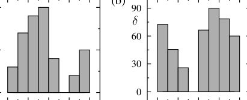
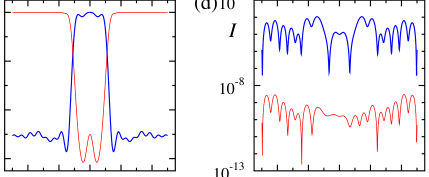
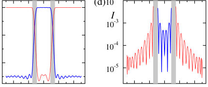

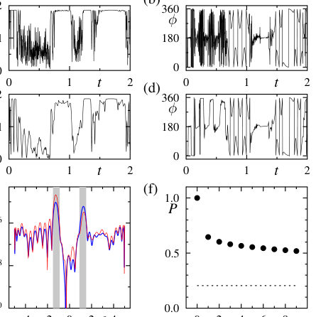
← Index · ← Previous · Next →
Authors: Nihar Ranjan Dash, Sanjoy Dutta, R. Srikanth, Subhashish Banerjee
Type: theory · Category: quantum information and computing · PDF: https://arxiv.org/pdf/2606.09379v1
Analysis basis: full PDF text, analyzed in chunks
Topic relevance: entanglement & information structure 1/5 · quantum measurements 1/5
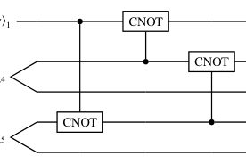
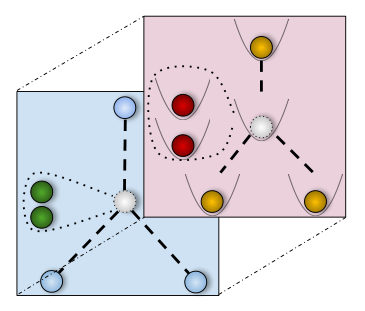
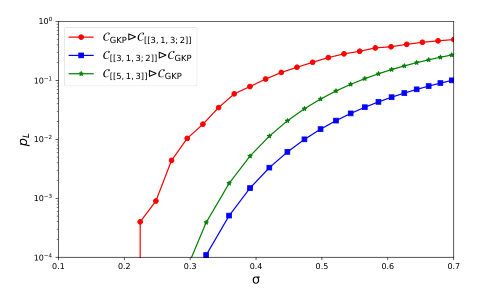
Summary. This paper develops novel entanglement-assisted continuous-variable concatenated codes by combining EA stabilizer codes with GKP bosonic codes. It theoretically demonstrates that these concatenated structures effectively suppress quadrature errors, achieving a variance reduction proportional to $1/n$. This advances the field of fault-tolerant quantum computation for bosonic systems.
Why it may be interesting. This work is highly relevant as it pushes the boundaries of quantum information theory by merging two advanced QEC paradigms (EA and CV bosonic codes). The focus on error suppression factors provides concrete theoretical benchmarks for future experimental implementations in quantum optics or superconducting circuits.
Main problem. The research aims to enhance quantum error correction rates by combining entanglement-assisted (EA) stabilizer codes with bosonic continuous-variable (CV) codes, specifically the Gottesman-Kitaev-Preskill (GKP) code.
Main result. They propose and analyze two concatenated structures ($ ext{EA} riangleright ext{GKP}$ and $ ext{GKP} riangleright ext{EA}$) that demonstrate significant suppression of quadrature errors, achieving a variance reduction factor of $1/n$ in the general case.
Method. The analysis involves deriving logical state representations for concatenated codes, calculating syndrome measurements from Gaussian unitary encoders, and employing Maximum Likelihood Estimation (MLE) to estimate and correct residual quadrature errors.
Model / system. The system models quantum information encoded in bosonic modes using GKP states. The theoretical framework utilizes stabilizer formalism generalized to include entanglement assistance via ebits for error correction.
Key observables. Logical failure probability ($p_L$), residual quadrature error variances ($ ext{Var}(\zeta^_q) = ext{Var}(\zeta^p)$), and the success probability of bit identification ($p$).}
Important parameters / regimes. The number of qubits/modes ($n$), the noise variance ($\sigma^2$), and the entanglement resource (ebits).
Assumptions / limitations. The analysis assumes independent and identically distributed (iid) Gaussian random shift errors, and for the general result, it relies on syndrome measurements falling within a specific range $[-\sqrt{\pi}/2, \sqrt{\pi}/2]$.
Figures summary. Figure 1 illustrates encoding circuits for GKP Bell pairs using both computational and canonical bases. Figure 5 compares the logical failure probability versus standard deviation for different concatenation orders.
Paper structure. The paper first establishes the theoretical basis by combining EA concepts with bosonic codes (GKP). It then details two specific concatenation orders ($ ext{EA} riangleright ext{GKP}$ and $ ext{GKP} riangleright ext{EA}$) using examples like $n=3$. The core analysis involves deriving error suppression factors, culminating in a general theorem showing $1/n$ variance reduction for the $ ext{CGKP} riangleright C[[n,1,n;n-1]]$ code.
Entanglement-assisted (EA) stabilizer codes enhance the rate of error correction in relation to codes with no pre-shared entanglement. Meanwhile, bosonic error-correcting codes, such as the Gottesman-Kitaev-Preskill (GKP) code, can be concatenated with qubit stabilizer codes to significantly reduce the logical failure probability of those stabilizer codes. First, we combine the above two concepts to propose an EA version of the qubit-into-oscillators concatenated code that chains an EA-stabilizer (outer) code with a GKP (inner) code. As an example we present a three-qubit EA-repetition concatenated with a GKP code. Second, we propose an EA version of the non-Gaussian oscillator-into-oscillators concatenated code that chains a GKP (outer) code with an EA-stabilizer (inner) code. As an example we present a GKP code concatenated with a three-qubit EA repetition code that uses two maximally entangled modes (emodes) and suppresses the variances of both position and momentum quadrature errors of a data mode. Furthermore, we generalize the latter example to a family of GKP code concatenated with a $n$-qubit EA repetition code that uses ${n-1}$ emodes and suppresses the variances of both position and momentum quadrature errors of a data mode by a factor ${1/n}$.
Authors: Hugo Jacinto, Xavier Valcarce, Victor Barizien, Élie Gouzien, Nicolas Sangouard
Type: theory · Category: quantum information and computing · PDF: https://arxiv.org/pdf/2606.07734v1
Analysis basis: full PDF text, analyzed in chunks
Topic relevance: entanglement & information structure 1/5 · methods for driven-dissipative 1/5
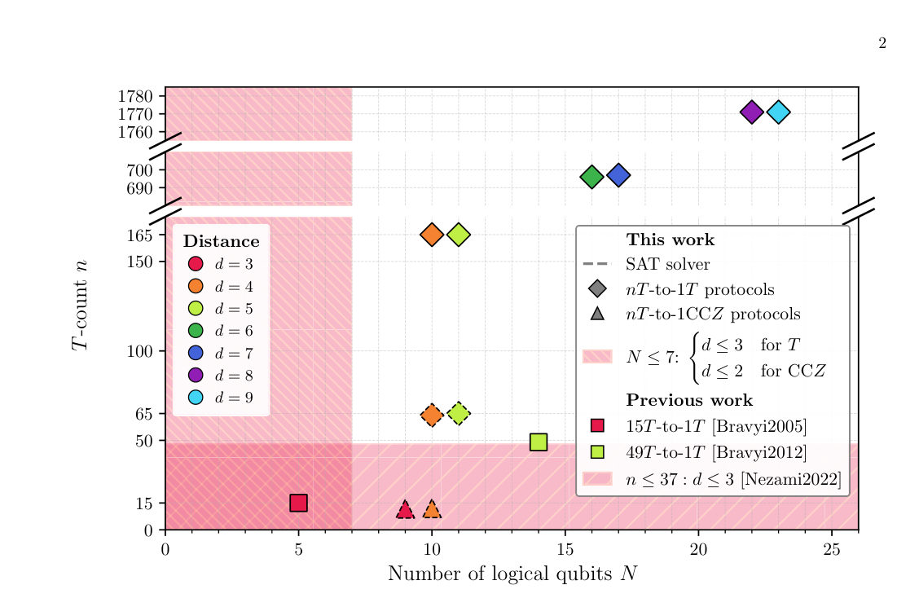
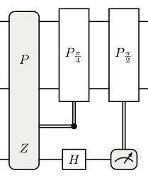
Summary. This work tackles the critical problem of generating high-fidelity magic states necessary for fault-tolerant quantum computing. By reformulating distillation protocols using classical error-correcting codes, the authors used SAT solvers to derive new theoretical bounds and construct highly compact distillation factories. This advances the understanding of resource overhead by minimizing both qubit count and required operations.
Why it may be interesting. While focused on quantum computation theory, the rigorous application of classical coding theory and computational search techniques (SAT solving) provides powerful generalizable methods for analyzing resource overhead in complex physical systems.
Main problem. The primary challenge is developing efficient, fault-tolerant methods for producing high-fidelity magic states (like $|T angle$) required for universal quantum computation.
Main result. The authors derived new, compact distillation protocols achieving higher distances ($d=5$ for T-to-T) using fewer physical qubits than previously known. They also established no-go theorems relating protocol parameters.
Method. They employed a combination of classical error-correcting code theory and Boolean Satisfiability (SAT) solvers to systematically constrain the design space of distillation protocols.
Model / system. The focus is on implementing logical T gates using magic state distillation factories based on the repetition code. The analysis involves mapping quantum constraints onto algebraic structures solvable by SAT solvers.
Key observables. Distillation distance ($d$), number of physical qubits ($N$), and the required T-count ($n$).
Important parameters / regimes. The relationship between $N$, $d$, and $n$ is central; specific results include achieving $d=5$ on $N=11$ qubits.
Assumptions / limitations. Protocols are analyzed by framing the problem using classical error-correcting code structures, simplifying the initial quantum description via Pauli product rotations.
Figures summary. Figures illustrate the comparison of T-count vs. number of logical qubits for various distillation distances and show circuit diagrams for gate teleportation/correction.
Paper structure. The paper progresses from general necessity (magic state distillation) to specific mathematical tools (classical codes, SAT solvers), deriving bounds and constructing optimized protocols for both $|T angle$ and $\sqrt{T}$ states.
Producing high-fidelity magic states using the smallest possible amount of physical qubits and operations stands as a very important challenge to achieve fault-tolerant quantum computation at scale. Besides emerging proposals for alternative methods such as cultivation, magic state distillation remains essential for achieving very low error rates. Known distillation protocols are usually built through quantum codes derived from triorthogonal matrices. Here, exploiting the specific noise structure present in magic state distillation protocols, we show that classical error-correcting codes offer a simpler framework for deriving these protocols. This formulation is particularly well suited to systematic numerical and analytical studies of distillation protocols involving a fixed number of qubits. Specifically, we use a SAT solver to derive a series of no-go theorems that relate key figures of merit, including the number of qubits, the protocol depth, the factory distance, and the prefactor in the output error rate. For instance, we prove that any $T$-to-$T$ state distillation protocol using fewer than eight qubits can detect at most three errors, while any $T$-to-$\mathrm{CC}Z$ state distillation protocol using fewer than eight qubits can detect at most two errors. Our results also include new distillation protocols with the smallest number of qubits for a given distance in the literature, namely distance 4 and 5 $T$-to-$T$ state protocols supported on 10 and 11 qubits, as well as distance 3 and 4 $T$-to-$\mathrm{CC}Z$ state distillation protocols supported on 9 and 10 qubits.
Authors: David Dentelski
Type: theory · Category: quantum information and computing · PDF: https://arxiv.org/pdf/2606.08758v1
Analysis basis: full PDF text, analyzed in chunks
Topic relevance: methods for driven-dissipative 1/5 · quantum measurements 1/5
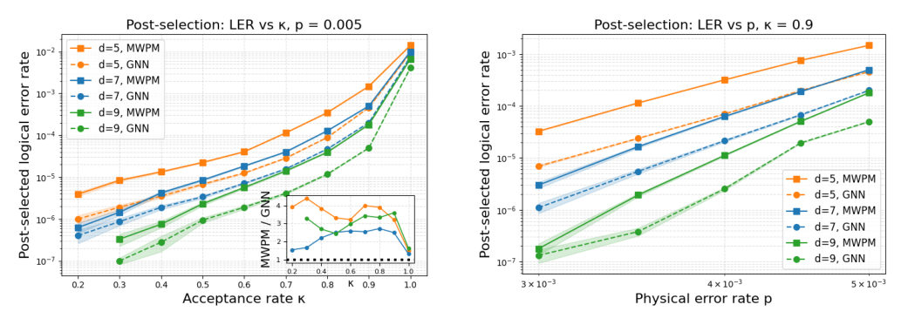
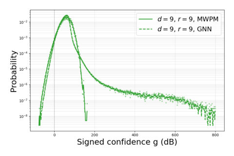
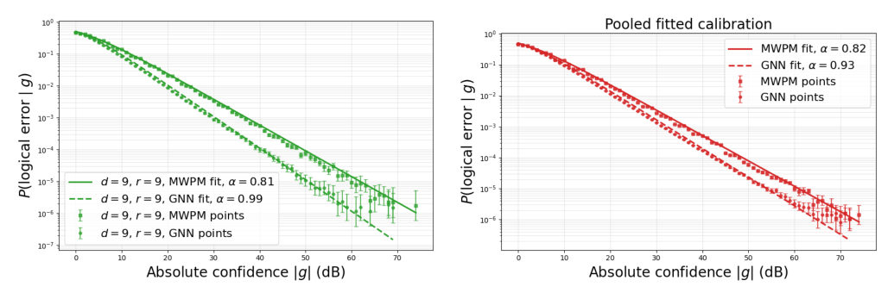
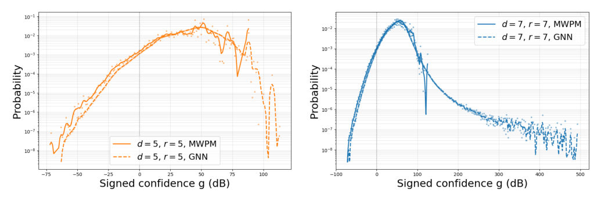
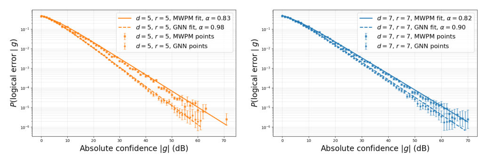
Summary. This paper investigates whether the confidence score generated by a Graph Neural Network (GNN) can replace the traditional 'logical gap' used for decoding measurements in quantum error correction. By comparing performance on the rotated surface code, the authors demonstrate that the GNN-derived soft information leads to lower logical error rates and better calibration than the standard Minimum Weight Perfect Matching approach. This suggests GNNs are a powerful tool for extracting reliable confidence metrics from syndrome data.
Why it may be interesting. It provides a concrete example of applying machine learning techniques (GNNs) to extract physically meaningful soft information in quantum error correction, offering a scalable alternative when computationally intensive methods like MWPM are impractical.
Main problem. To determine if a Graph Neural Network (GNN) decoder's raw output confidence score can serve as a reliable, learned proxy for the established 'logical gap' used in quantum error correction decoding.
Main result. Post-selection based on the GNN logit yields a lower logical error rate than using the conventional Minimum Weight Perfect Matching (MWPM) complementary gap across tested noise regimes. The GNN also shows better calibration towards ideal theoretical estimates.
Method. The study compares two soft information measures—the GNN's output logit and the MWPM gap—by testing their efficacy in post-selecting measurements from a quantum error-correcting code.
Model / system. The analysis is performed on the rotated surface code using syndrome measurements generated under uniform circuit-level noise. The comparison involves decoding performance across varying acceptance rates ($\kappa$) and physical error probabilities ($p$).
Key observables. Logical Error Rate (LER), signed confidence distribution, and calibration slope ($\alpha$) relative to the ideal posterior log-likelihood ratio.
Important parameters / regimes. Physical error rate ($p=0.005$), code distance ($d$), number of stabilizer rounds ($r$), and acceptance rate ($\kappa$).
Assumptions / limitations. The primary assumption is that ranking measurements by confidence score (rather than absolute scale) determines the post-selection advantage, and that the GNN can learn sufficient soft information without explicit knowledge of matching probabilities.
Figures summary. Figures compare LER vs. acceptance rate for both decoders; other figures show probability distributions and empirical calibrations of the signed confidence scores against theoretical expectations.
Paper structure. The paper introduces the problem by comparing GNN decoding to MWPM gap estimation, presents quantitative results showing superior performance (lower LER) for the GNN, analyzes the shape and calibration of the confidence scores, and concludes with implications for general decoder design.
To utilize quantum error-correcting codes, a decoder must infer the logical sector from the measured syndrome. Beyond producing a hard logical decision, some decoders provide soft information that estimates the reliability of that decision. For minimum-weight perfect matching (MWPM), a common confidence measure is the complementary, or logical, gap. Here we test whether the logit of a graph neural network (GNN) decoder can act as a learned proxy for the logical gap. Using a pretrained GNN for the rotated surface code under uniform circuit-level noise [Physical Review Research, 7(2):023181, 2025], we compare its soft output with the MWPM complementary gap on the same sampled syndromes. We find that post-selection based on the GNN logit yields a lower logical error rate than one based on the MWPM gap. Shot-by-shot, the signed GNN confidence distribution resembles the signed MWPM gap at low and intermediate values, but assigns higher confidence to many correctly decoded shots. While both scores approximate the posterior log-likelihood ratio, the GNN confidence magnitude is closer to its ideal value. These results show that a neural-network decoder trained only on syndromes and logical labels learns both gap-like discrimination and a quantitative confidence scale, enabling confidence-based post-selection when MWPM gap estimates are unavailable, costly, or poorly matched to the noise model.
Authors: Kimia Mohammadi, Paul J. Godin, Thomas Jennewein
Type: theory · Category: quantum information and computing · PDF: https://arxiv.org/pdf/2606.09805v1
Analysis basis: full PDF text, analyzed in chunks
Topic relevance: entanglement & information structure 1/5 · interference shaping light 1/5
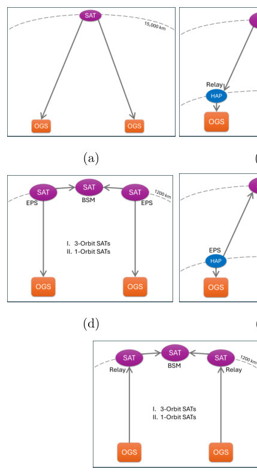
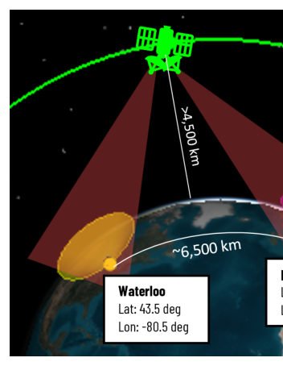
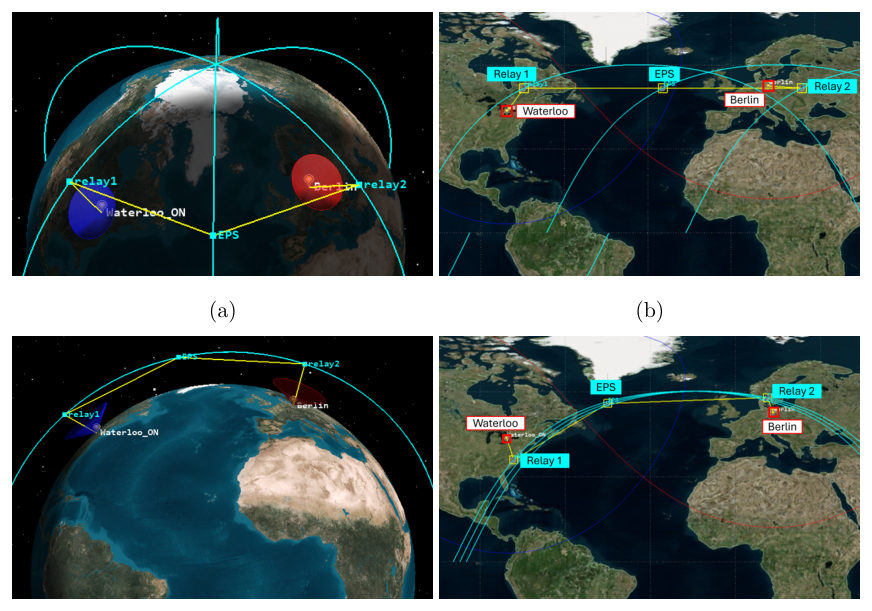
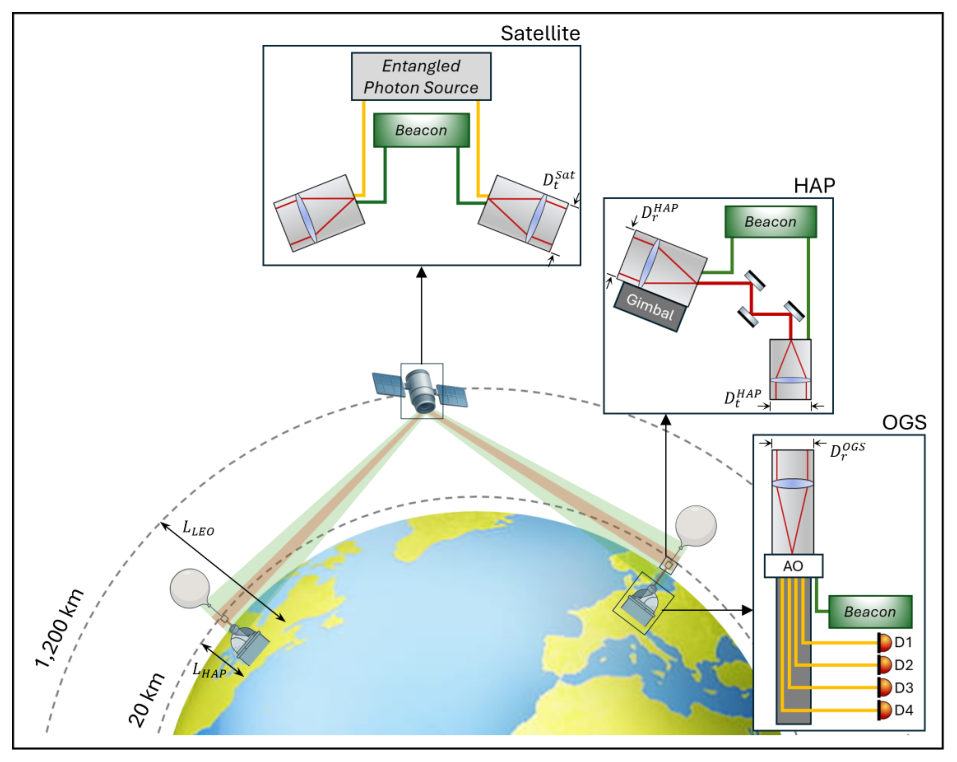
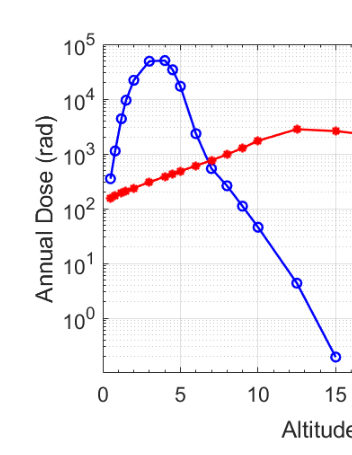
Summary. This paper analyzes methods for achieving transatlantic quantum entanglement distribution using satellites and stratospheric relays. By modeling various link architectures, the authors determined that a hybrid LEO satellite and HAP system provides the highest secure key rate ($\approx 5 imes 10^6$ bits/year). This demonstrates the significant advantage of incorporating low-cost, maneuverable atmospheric relays over single high-altitude satellites.
Why it may be interesting. This work directly addresses the engineering challenges of scaling quantum communication networks over continental distances by proposing a practical hybrid space/air relay solution that significantly outperforms purely satellite-based approaches.
Main problem. The study investigates feasible architectures for distributing quantum entanglement across transatlantic distances (6,500 km) to establish a global quantum network.
Main result. A hybrid architecture combining an entangled photon source on a Low Earth Orbit (LEO) satellite with two passive High-Altitude Platform (HAP) relays yields the highest entanglement distribution rate ($\approx 5 imes 10^6$ secure key bits/year).
Method. The authors modeled various free-space link configurations, comparing single MEO satellites against hybrid LEO+HAP systems by analyzing link budgets and achievable key rates.
Model / system. The system involves ground stations communicating with space assets (LEO/MEO satellites) and stratospheric HAPs acting as passive optical relays. The analysis incorporates orbital mechanics, free-space link loss calculations, and quantum key distribution metrics.
Key observables. Entanglement distribution rate (secure key bits per year), Quantum Bit Error Rate (QBER), and violation of the CHSH Bell inequality parameter ($S$).
Important parameters / regimes. Transatlantic distance ($\sim 6,500$ km); LEO altitude ($\sim 1,200$ km); HAP altitude ($\sim 20$ km); Ground receiver aperture sizes (e.g., $30 ext{ cm}$ vs $1 ext{ m}$).
Assumptions / limitations. The study assumes that HAPs act purely as passive relays and does not rely on quantum memories or repeaters for entanglement distribution.
Figures summary. Figures compare link loss and elevation angle variations across different satellite constellations (MEO vs. LEO+HAP); Figure 7 illustrates the relationship between Bell-violation parameters and QBER requirements.
Paper structure. The paper systematically compares multiple link architectures (single MEO, multi-LEO, LEO+HAP) by calculating key performance indicators like achievable secure key rates and verifying entanglement preservation via Bell tests.
To explore the pathways toward establishing a global quantum network, we investigate several link architectures for transatlantic quantum entanglement distribution over a 6,500 km ground distance. We define free-space link configurations involving satellites and stratospheric high altitude platforms (HAPs), using today's technology and without relying on quantum memories and repeaters. Considering link budgets, space radiation, orbital characteristics, and system complexity we find that a hybrid architecture consisting of an entangled photon source located on a low Earth orbit (LEO) satellite supported by two passive optical relays located on HAPs provides the overall highest entanglement distribution rate. In addition, the satellite HAP architecture offers practical advantages in payload design and launch requirements, and the ability to lower the weather-related link interruptions assuming some maneuverability of HAPs. Overall, this hybrid configuration yields on the order of 5X10^6 secure key bits per year using 30 cm aperture ground receivers, nearly two orders of magnitude higher than achievable with a single MEO satellite and 1 m aperture ground receivers. Our results highlight the major benefits of hybrid satellite HAP architectures by reducing system complexity while enabling scalable and more accessible long-range quantum communication networks.
Authors: Baocheng Sun, Thomas Vidick
Type: theory · Category: quantum information and computing · PDF: https://arxiv.org/pdf/2606.09588v1
Analysis basis: full PDF text, analyzed in chunks
Topic relevance: entanglement & information structure 1/5 · quantum measurements 1/5
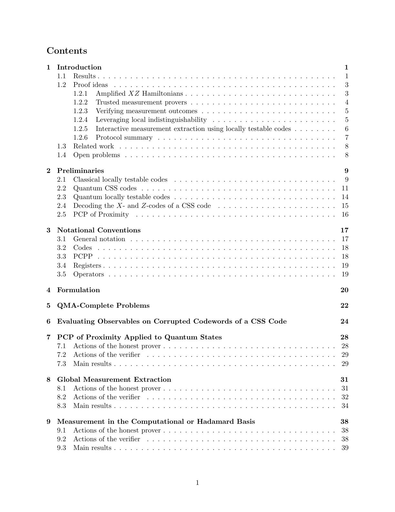
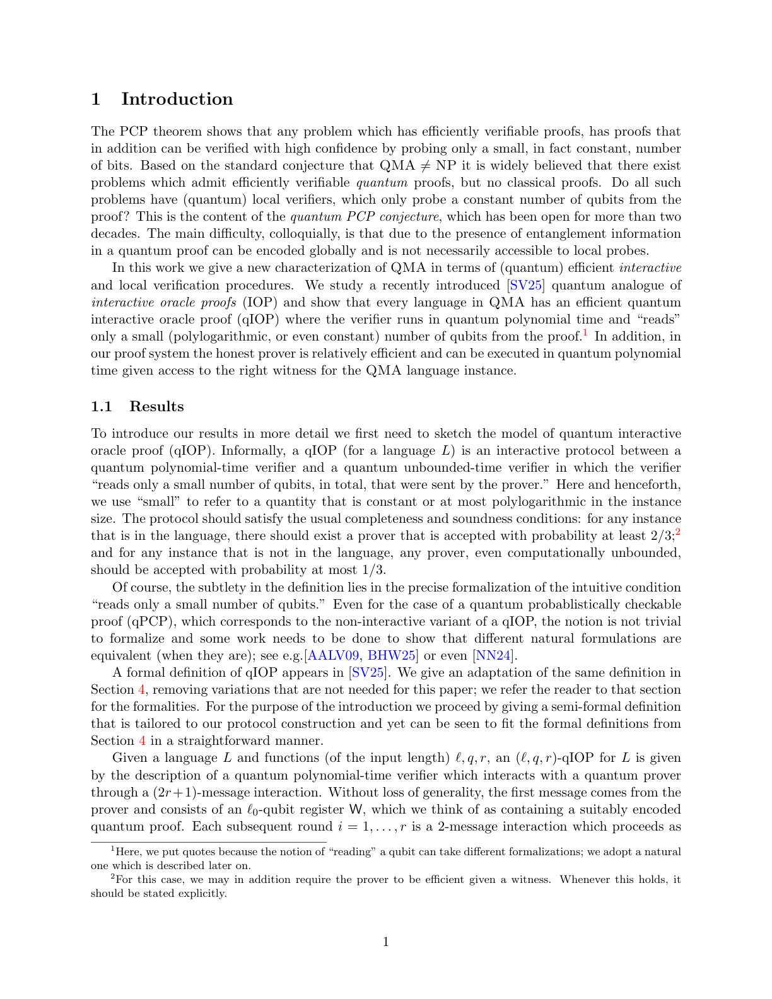
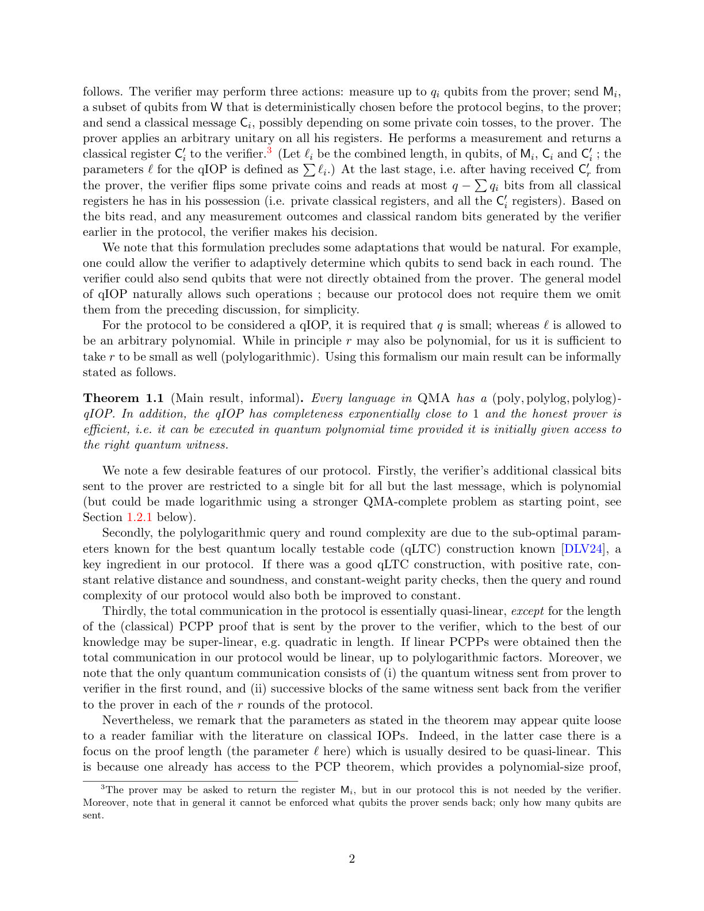
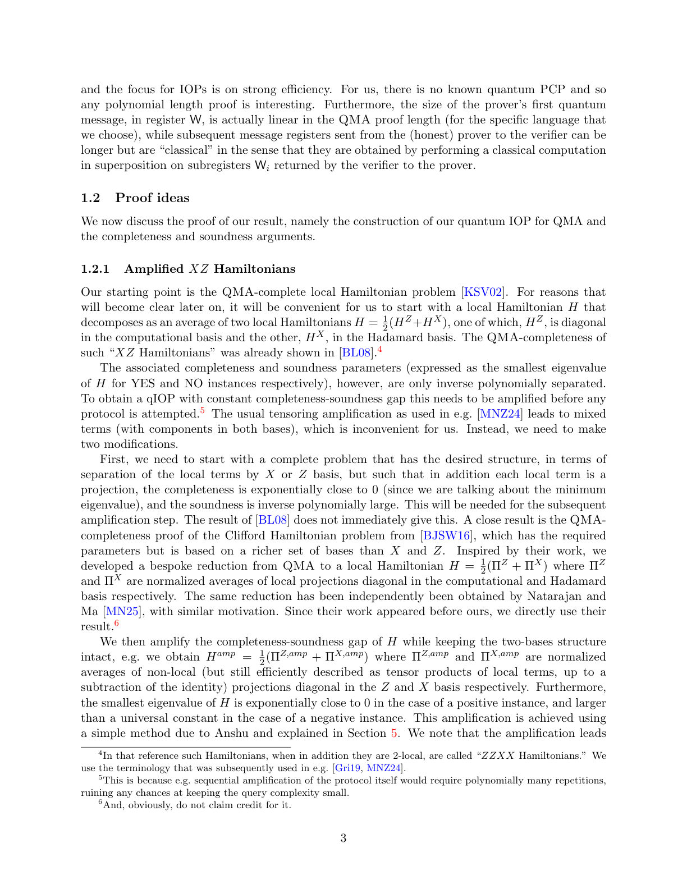
Summary. This work develops a quantum interactive proof system (qIOP) to characterize problems in the complexity class QMA. By combining quantum locally testable codes with classical PCP techniques, the authors show that QMA can be verified using only polylogarithmic measurements from the verifier. This result is significant as it provides an information-theoretic characterization of QMA without assuming a quantum PCP theorem.
Why it may be interesting. It provides deep connections between complexity theory (QMA) and quantum coding theory, offering tools for verifying complex quantum computations efficiently.
Main problem. The paper aims to establish a quantum analogue of interactive oracle proofs (qIOP) to characterize Quantum Merlin-Arthur (QMA) problems.
Main result. They prove that every language in QMA possesses an efficient qIOP where the verifier only needs to read a polylogarithmic number of qubits, providing a local and robust characterization of QMA.
Method. The protocol combines quantum Locally Testable Codes (qLTCs) with classical techniques like Probabilistically Checkable Proofs of Proximity (PCPP). The verification process involves multiple stages: measurement extraction and constraint checking.
Model / system. The model is the qIOP, involving a quantum verifier interacting with an unbounded prover. It utilizes quantum error-correcting codes (qLTCs) to encode states, which are tested via local measurements on small subsets of qubits.
Key observables. Acceptance probability of the energy test ($ ext{Pr}[ ext{energy test accepts}]$), fidelity between state evolution operators, and measurement outcomes in Z or X bases.
Important parameters / regimes. The verifier reads a polylogarithmic number of qubits ($q$), while total communication is polynomial ($\ell$). The success relies on the code distance ($d_q$) and locality ($q$).
Assumptions / limitations. The result holds in the absence of a quantum PCP theorem, relying on the existence of suitable qLTC codes with specific parameters.
Paper structure. The paper builds from defining the qIOP model to implementing measurement extraction using qLTCs (Single/Global Measurement Extraction), followed by a final energy test phase that combines these results to prove the QMA characterization.
The model of interactive oracle proofs (IOP) generalizes the notion of probabilistically checkable proof (PCP), in which a static proof is verified probabilistically by querying a small number of bits, to the interactive setting: a polynomial-time verifier interacts with an unbounded prover, but is restricted to only reading a small number of bits, in total, from the messages sent by the prover. IOPs provide a relaxed setting in which to study local probabilistic verification. They have proved instrumental in devising efficient methods for verification through subsequent compilation into non-interactive or succinct protocols. We study a quantum analogue of interactive oracle proofs (qIOP) in which the verifier and communication are both allowed to be quantum; yet the verifier is restricted to perform measurements only on a small number of qubits received from the prover. Our main result is a qIOP for any language in QMA, in which the total communication is polynomial but the verifier only reads a polylogarithmic number of qubits in total. The protocol has completeness parameter exponentially close to $1$ and soundness bounded away from $1$ by a constant. In the absence of a quantum PCP theorem, this provides the first information-theoretically sound local and robust characterization of QMA, albeit interactive. Our protocol combines the use of a quantum locally testable code (LTC) with classical techniques, notably probabilistically checkable proofs of proximity (PCPP). We avoid the necessity for complex multi-qubit tests employed in other settings by leveraging the local indistinguishability property of the quantum LTC.
Authors: Yuhang Deng, Gabriel Mee, Tyler Wannamaker, Keke Feng, Mingyu Xu, Weiwei Xie, M. Brian Maple
Type: experiment · Category: strongly correlated electrons · PDF: https://arxiv.org/pdf/2606.07903v1
Analysis basis: full PDF text, analyzed in chunks
Topic relevance: Kondo & dissipative impurity 1/5 · analog quantum simulation 1/5
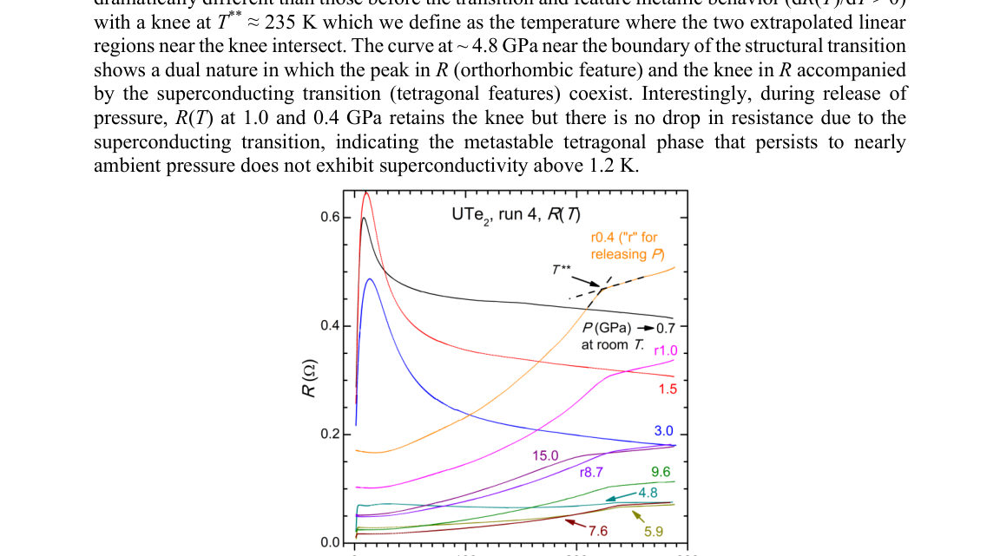
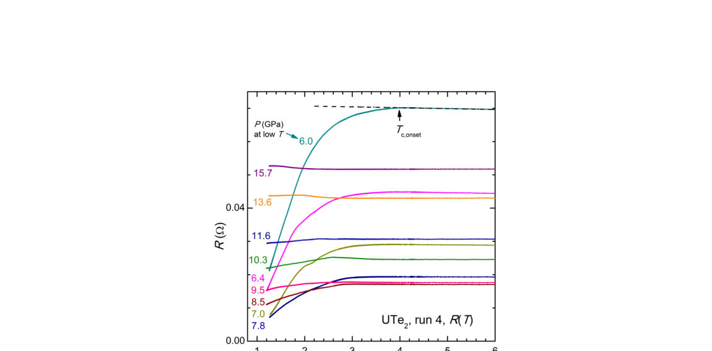
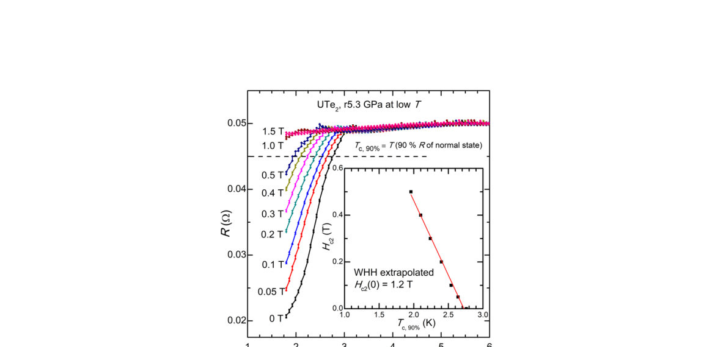
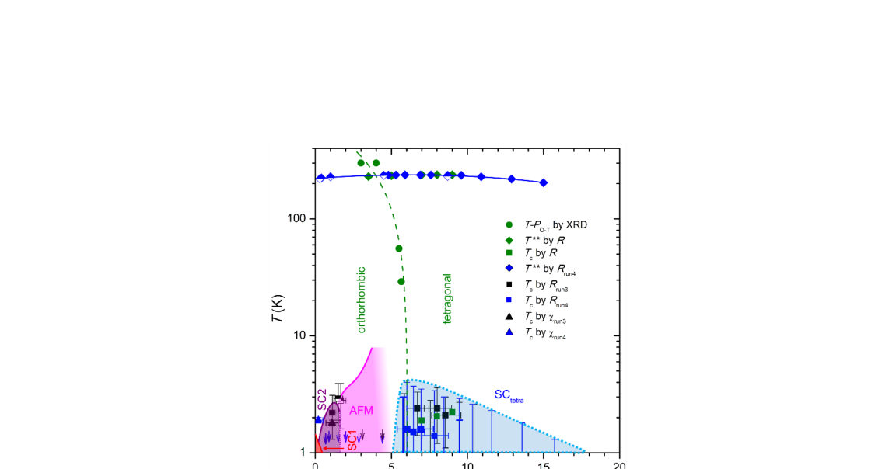
Summary. This work experimentally maps the superconducting phase diagram of UTe2 under high pressure, revealing a striking dichotomy between its orthorhombic and tetragonal phases. The findings suggest that structural changes tune the pairing mechanism from an unconventional state to a more conventional one in the tetragonal phase. This highlights how external tuning can stabilize different types of correlated electronic ground states.
Why it may be interesting. While focused on condensed matter, the comparison of BCS-like vs. unconventional pairing symmetries under external tuning (pressure) provides a model for understanding how quantum critical points can stabilize different types of correlated ground states.
Main problem. The study aims to map out the superconducting transition temperature ($T_c$) versus pressure ($P$) phase diagram of UTe2, specifically investigating the structural and electronic dichotomy between its orthorhombic and high-pressure tetragonal phases.
Main result. Superconductivity in the tetragonal phase is robust and appears more conventional (orbitally limited) compared to the fragile, unconventional superconductivity seen in the orthorhombic phase. The normal state exhibits a persistent 'knee' feature ($T^{**}$) linked to potential magnetic ordering.
Method. The research relies on electrical transport measurements ($ ext{R}(T)$) and AC magnetic susceptibility ($\chi(T,P)$) performed under high pressure using Diamond Anvil Cells (DACs).
Model / system. The system is Uranium ditelluride ($ ext{UTe}_2$), a heavy-fermion superconductor known for complex interplay between structural transitions, magnetism, and superconductivity. The study compares the superconducting behavior across two distinct crystal structures.
Key observables. Superconducting transition temperature ($T_c$), upper critical field ($ ext{H}_{c2}$), normal-state resistivity $ ho(T)$ exhibiting a 'knee' feature ($T^{**}$).
Important parameters / regimes. Pressure range up to 16 GPa; characteristic fields like the Pauli paramagnetic limit and orbital limits.
Assumptions / limitations. The analysis assumes that structural changes (orthorhombic $\leftrightarrow$ tetragonal) fundamentally alter the pairing mechanism, leading to different superconducting symmetries.
Figures summary. Figures illustrate representative resistance vs. temperature curves showing SC transitions in the tetragonal phase at various pressures, and potentially show the $T-P$ phase diagram.
Paper structure. The paper systematically measures transport properties across structural transitions, contrasting the behavior of superconductivity (SC) and normal state features ($T^{**}$) between the two phases to deduce underlying electronic mechanisms.
Electrical transport and magnetic measurements have been made on UTe2 under pressure P up to approximately 16 GPa to determine the superconducting transition temperature Tc vs P phase diagram in the high-pressure tetragonal phase. Superconductivity emerges near 5 GPa, coincident with the orthorhombic to tetragonal phase transition; in the tetragonal phase, Tc reaches a maximum value of approximately 4 K at 6 GPa and then decreases with P and appears to vanish near 18 GPa. Tetragonal UTe2 has a relatively small upper critical field Hc2(0) $\approx$ 1.2 T at 5.3 GPa, smaller than the Pauli paramagnetic limit, and is orbitally limited with a coherence length $ξ$tetra $\approx$ 16.5 nm. This small value of Hc2(0) favors more conventional superconductivity; in contrast, the large values of Hc2(T) for orthorhombic UTe2 exceed the Pauli paramagnetic limit in all three crystallographic directions and have been attributed to unconventional superconductivity, widely believed to involve spin-triplet pairing. The temperature-pressure phase diagram of UTe2 shows a striking dichotomy: a narrow, fragile, unconventional superconducting region in the orthorhombic phase vs a broad, robust, and more conventional superconducting dome in the tetragonal phase. This dichotomy is consistent with the proposal that U-dimers, present (absent) in the orthorhombic (tetragonal) phase, may play a role in spin-triplet superconductivity of orthorhombic UTe2. In the tetragonal phase, the normal-state electrical resistivity $ρ$(T) exhibits metallic behavior with a knee between 200 and 240 K that depends weakly on P and most likely marks the onset of a transition to a magnetically ordered phase that coexists with superconductivity.
Authors: Brian Coyle, Snehal Raj, Virag Umathe, El Amine Cherrat, Elham Kashefi
Type: both · Category: quantum information and computing · PDF: https://arxiv.org/pdf/2606.09734v1
Analysis basis: full PDF text, analyzed in chunks
Topic relevance: quantum measurements 1/5
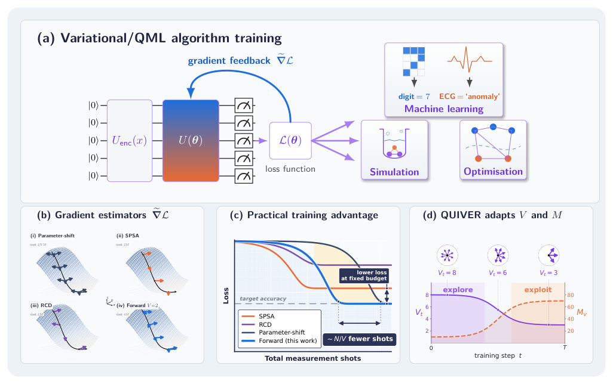
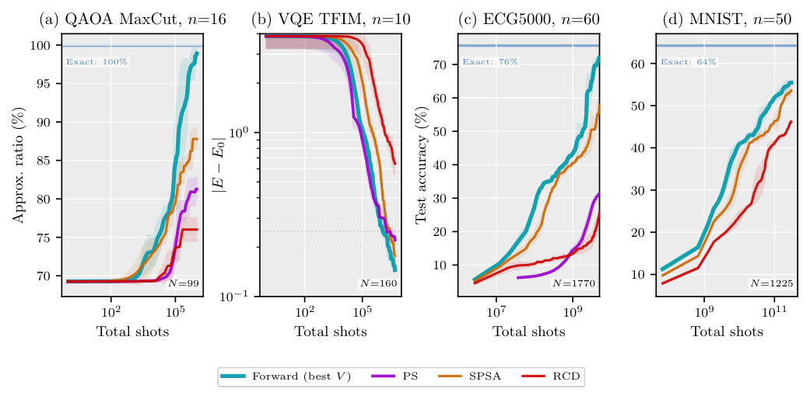
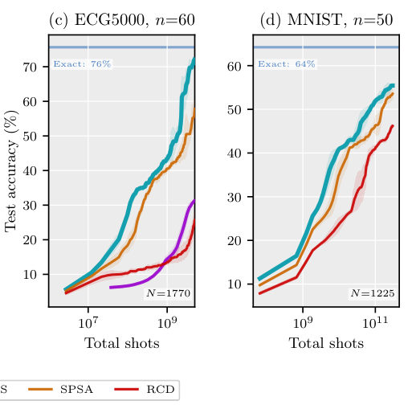
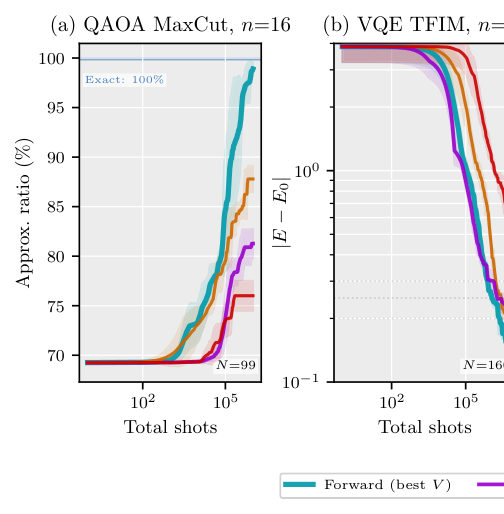
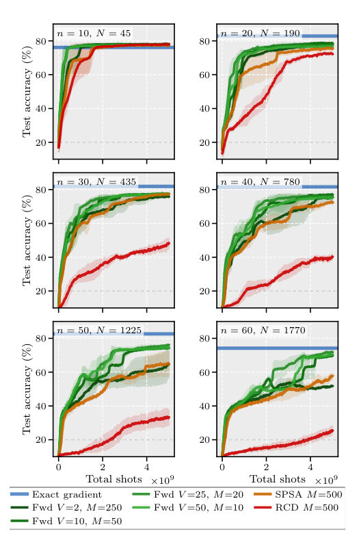
Summary. The paper introduces an advanced forward gradient estimator framework to overcome the prohibitive measurement cost associated with calculating gradients for large parameterised quantum circuits. By adaptively optimizing both the number of random directions and the shots allocated per direction, the proposed QUIVER optimizer significantly outperforms established methods across various quantum machine learning benchmarks.
Why it may be interesting. This work provides a concrete, resource-aware algorithmic improvement for variational quantum algorithms, directly addressing the primary computational bottleneck in scaling up near-term quantum hardware applications.
Main problem. Training parameterised quantum circuits (PQCs) is bottlenecked by the measurement cost of gradient estimation, which scales poorly with the number of trainable parameters.
Main result. A forward gradient estimator framework, combined with an adaptive optimizer (QUIVER), achieves orders of magnitude more efficient training than standard methods like the Parameter-Shift Rule for large quantum neural networks.
Method. The authors propose a forward gradient estimator based on the forward mode of automatic differentiation, averaging random directional derivatives to reconstruct the full gradient efficiently. They combine this with an adaptive optimizer that jointly optimizes the number of directions and measurement shots.
Model / system. The work focuses on training PQCs used in Variational Quantum Algorithms (VQA) like VQE and QNNs. Benchmarks include classifying ECG5000 data, MNIST images, solving QAOA MaxCut problems, and estimating ground states for TFIM Hamiltonians.
Key observables. Energy error ($|E - E_0|$), approximation ratio ($r$), Mean Squared Error (MSE) of the gradient estimator, and total measurement shot count.
Important parameters / regimes. Number of parameters ($N$), number of random directions sampled ($V$), shots per direction ($M$), step size ($\epsilon$), and learning rate ($\eta$).
Assumptions / limitations. The analysis relies on assumptions regarding the convergence properties (e.g., PL condition locally) and uses central finite-difference approximations for directional derivatives, which introduce bias.
Figures summary. Figures compare the measurement shot costs of various gradient estimators (PS vs. Forward) showing significant savings with forward gradients; other figures show performance comparisons across multiple benchmark tasks (QAOA, VQE, MNIST) demonstrating superior convergence rates for QUIVER.
Paper structure. The paper systematically reviews existing gradient estimation techniques (PS, SPSA, RCD), introduces the unified forward gradient estimator parameterized by $V$, develops the adaptive optimization strategy (QUIVER) via joint $(V, M)$ minimization, and validates this approach across multiple complex quantum machine learning benchmarks.
Training parameterised quantum circuits (PQCs) on quantum hardware is bottlenecked by the measurement cost of gradient estimation, which under the parameter-shift rule scales linearly in the number of trainable parameters and dominates the total shot budget of training at scale. In this work, we propose a framework of forward gradient estimators for PQCs, based on the forward mode of automatic differentiation, that yields an unbiased estimator of the gradient by averaging a freely tunable number of random directional derivatives and recovers SPSA, random coordinate descent, and the parameter-shift rule as limiting cases, with no ancilla qubits or controlled-gate overhead. We prove that stochastic quantum forward gradient descent converges under standard assumptions, with an explicit second-moment expansion that interpolates between the single-direction extreme of SPSA and the full-gradient extreme of parameter-shift. Within this framework we derive QUIVER (Quantum Iterative V-adaptive Estimator Rule), an adaptive optimiser for parameterised circuits whose update rule follows from a closed-form minimum measurement-cost allocation. We show numerically that forward gradients train Hamming-weight-preserving orthogonal quantum neural networks with up to 60 qubits and 1770 parameters on the ECG5000 and MNIST datasets orders of magnitude more efficiently than the parameter-shift rule. We also demonstrate that our proposed QUIVER optimiser can outperform iCANS and gCANS measurement-frugal optimisers on optimisation problems using the quantum approximate optimisation algorithm and quantum simulation with the variational quantum eigensolver.
Authors: Alexandre Landry
Type: theory · Category: other · PDF: https://arxiv.org/pdf/2606.09592v1
Analysis basis: full PDF text, analyzed in chunks
Topic relevance: Keldysh / 2PI / non-Gaussian methods 1/5
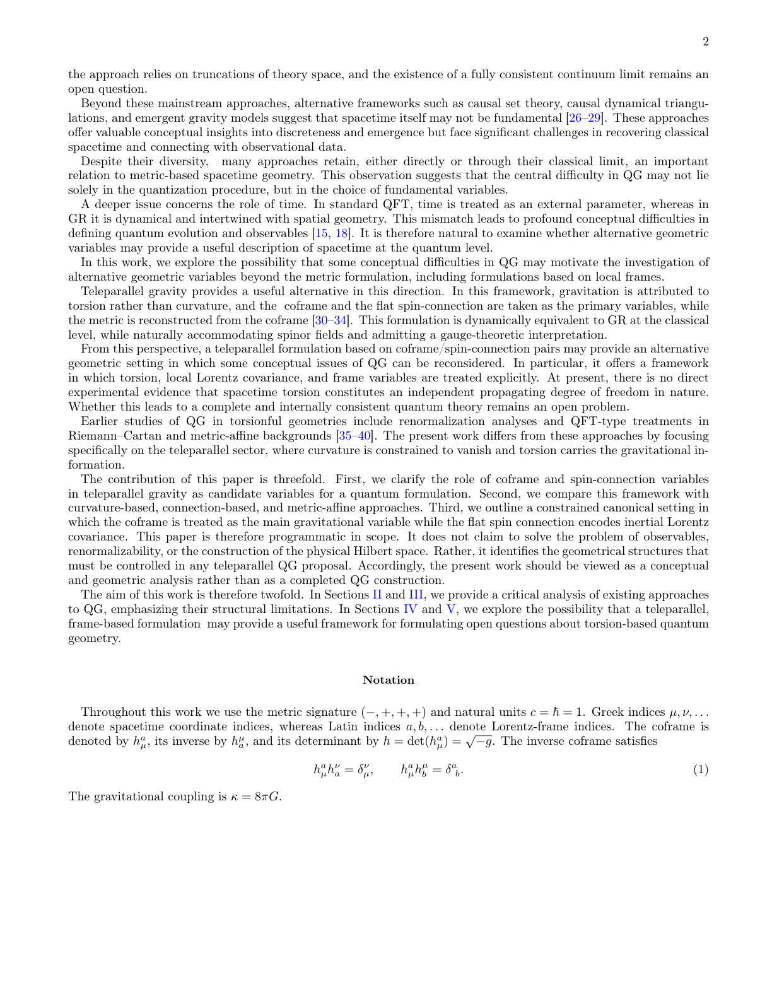
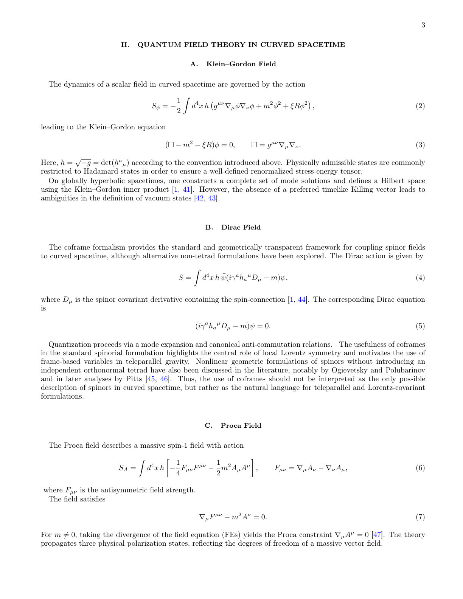
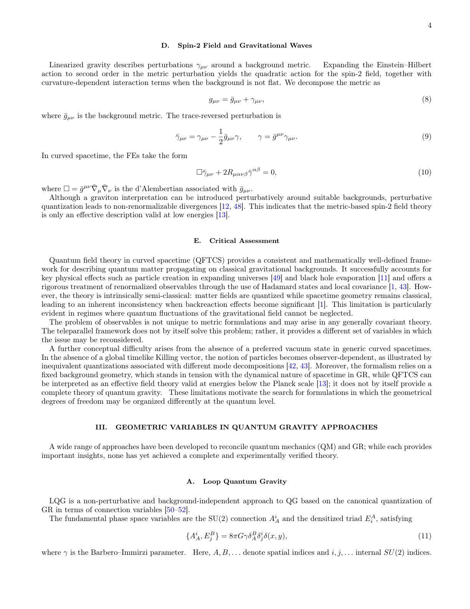
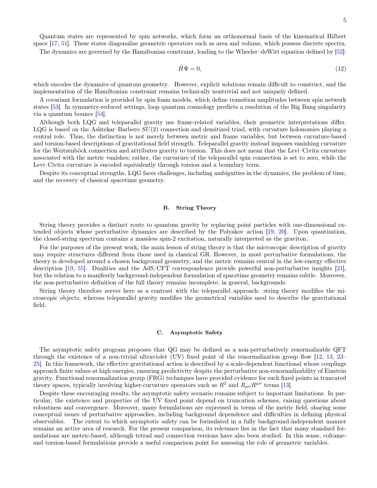
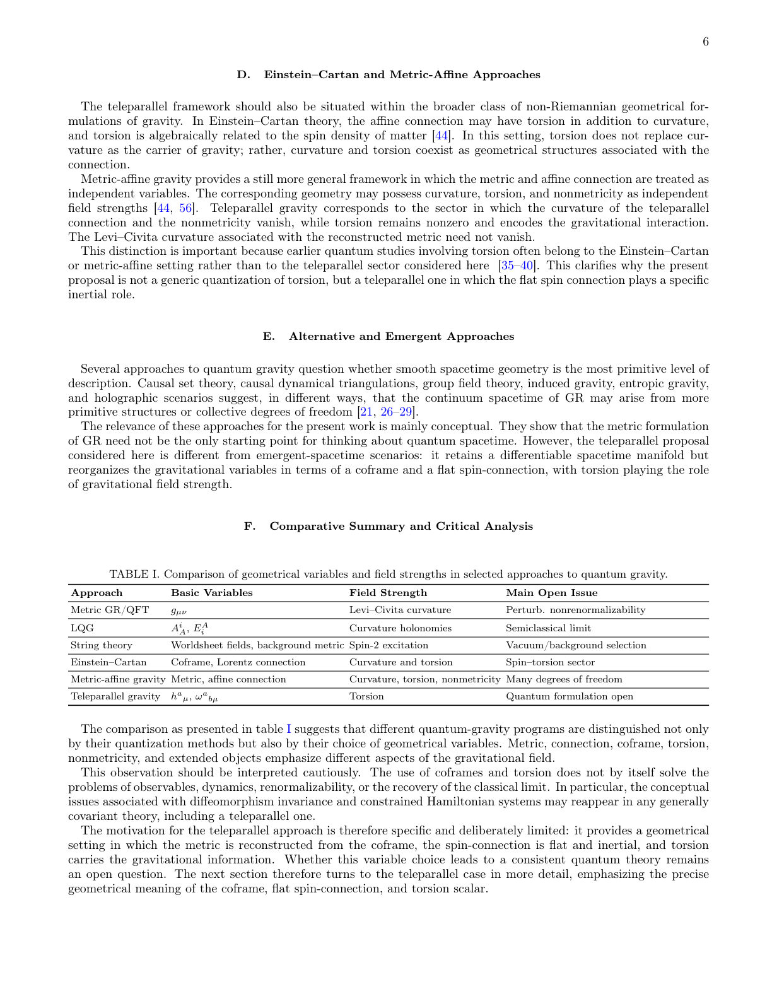
Summary. This paper explores alternative geometric foundations for quantum gravity by focusing on teleparallel gravity, which replaces curvature with torsion as the fundamental field strength. It argues that using coframe and spin-connection variables provides a natural gauge structure suitable for quantization. The work aims to identify necessary conceptual ingredients rather than providing a complete solution to quantizing spacetime itself.
Why it may be interesting. While focused on gravity, the development of a constrained quantum field theory based on gauge potentials (coframe/spin-connection) shares conceptual parallels with advanced topics in quantum information theory involving gauge symmetries and constraints.
Main problem. The fundamental incompatibility between Quantum Field Theory (QFT) and General Relativity (GR) at the Planck scale, necessitating a new framework for quantizing gravity.
Main result. The paper proposes that reformulating gravity using coframe and spin-connection variables, where dynamics are governed by torsion rather than curvature, provides a geometrically refined starting point for quantum gravity research.
Method. It compares various QG approaches (LQG, String Theory, Asymptotic Safety) and develops the teleparallel framework by treating the coframe/spin-connection pair as independent gauge variables.
Model / system. The model is a theoretical extension of General Relativity into the teleparallel gravity sector, utilizing the coframe ($\mathbf{h}^a_\mu$) and spin-connection ($\omega^a_{b\mu}$) to encode gravitational dynamics in torsion. It analyzes matter coupling (Klein-Gordon, Dirac) within this framework.
Key observables. Torsion ($T$), Curvature ($R$), Nonmetricity ($Q$), and the constraint algebra generators ($\hat{H}, \hat{D}_i, \hat{J}^{ab}$).
Important parameters / regimes. Planck scale; coupling constants $\kappa$; mass $m$ (for Proca field).
Assumptions / limitations. The primary assumption is that gravity can be reformulated using the coframe/spin-connection pair to achieve a gauge-like structure, bypassing some limitations of metric formulations.
Figures summary. Not specified in the notes; the text references comparative tables (TABLE I) summarizing different QG approaches based on their fundamental variables.
Paper structure. The paper first critiques QFTCS and reviews major QG candidates. It then introduces the teleparallel framework, detailing its geometric structure using coframe/spin-connection variables, deriving actions like $F(T)$, and finally outlining the canonical quantization program using constraint operators.
We revisit quantum field theory in curved spacetime (QFTCS) as a semi-classical framework for quantum matter on classical geometries, emphasizing its limitations, including vacuum ambiguity and background dependence. We briefly review major approaches to quantum gravity (QG), including Loop Quantum Gravity (LQG), string theory, and asymptotic safety, highlighting their conceptual challenges. Motivated by these issues, we outline a teleparallel framework based on coframe and spin-connection variables, where gravity is encoded in torsion rather than curvature. This framework naturally incorporates local Lorentz symmetry and fermionic couplings while displaying a gauge-like structure. We argue that the coframe/spin-connection pair provides an alternative and geometrically refined description of gravitational variables, which may serve as a useful starting point for future investigations of QG. The purpose of this work is not to provide a complete quantization of teleparallel gravity but to identify the geometric and conceptual ingredients that such a formulation would require.
Authors: Ralph V. Chamberlin, Sumiyoshi Abe
Type: theory · Category: statistical mechanics · PDF: https://arxiv.org/pdf/2606.09566v1
Analysis basis: full PDF text, analyzed in chunks
Topic relevance: non-equilibrium dynamics 1/5
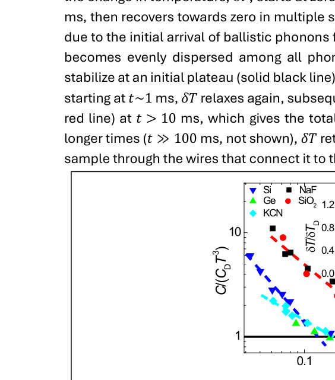
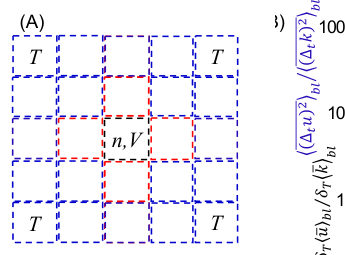
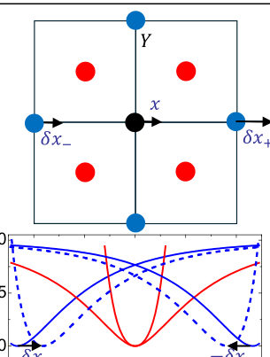
Summary. This work develops a theoretical framework to explain excess specific heat observed below the Debye prediction in perfect crystals. It attributes this anomaly to energy fluctuations caused by anharmonic interactions involving next-nearest-neighbor atoms modulating harmonic lattice vibrations. The theory successfully models these deviations using molecular dynamics simulations and provides insights applicable to amorphous materials.
Why it may be interesting. The connection drawn between lattice dynamics, anharmonicity, and anomalous low-temperature thermodynamics is highly relevant for understanding energy transport in complex quantum systems.
Main problem. The paper addresses the discrepancy between measured specific heat at low temperatures and the predictions of Debye's $T^3$-law in high-purity crystals.
Main result. Excess energy fluctuations, arising from anharmonic interactions involving next-nearest-neighbor atoms, modify the standard relation between energy fluctuations and specific heat, providing a quantitative explanation for the observed deviations.
Method. The authors develop a theory based on time- and phase-averaging of molecular dynamics simulations, treating localized excitations as decoupled from the main heat bath.
Model / system. The system modeled is crystalline solids (e.g., $ ext{SiO}_2$) analyzed via Molecular Dynamics (MD) simulations using the Lennard-Jones potential. The theory focuses on how anharmonic interactions between next-nearest-neighbor atoms modulate harmonic nearest-neighbor modes.
Key observables. Specific heat ($C_V$), energy fluctuation ratios ($\langle(\Delta t u)^2 angle / \langle(\Delta t k)^2 angle$), and correlation functions ($\Gamma_{0,0}( au)$).
Important parameters / regimes. Low temperatures ($T \ll 300$ K), the ratio of potential to kinetic energy fluctuations, and the anharmonic coupling strength derived from nnn interactions.
Assumptions / limitations. The theory assumes that localized excitations are decoupled from the heat bath (fast modulations) and uses semiclassical approximations for the energy modulation.
Figures summary. Figures illustrate time-resolved specific heat measurements showing deviations from Debye's law, and MD results confirming the divergence of fluctuation ratios at low T due to anharmonic terms.
Paper structure. The paper progresses by first presenting experimental evidence of $C_V$ deviation (Chunk 1), then developing a theoretical framework using MD simulations on L-J models to quantify excess energy fluctuations (Chunk 2), and finally generalizing this theory to predict the functional form of the specific heat anomaly ($T^{\lambda+1}$) based on anharmonic coupling (Chunk 3).
Measured specific heats often exceed Debye's T^3-law, even in high-purity single crystals. Analogous excess energy fluctuations in molecular dynamics (MD) simulations of crystals with no defects come from fast energy modulations involving next-nearest-neighbor atoms. Here, a theory is developed for these modulations, based on time- and phase-averaging followed by thermal averaging. This order of averaging is guided by evidence from the simulations and various experimental techniques showing that localized excitations are decoupled from the heat bath. Emergent nonextensivity is interpreted by analogy with anomalous diffusion. The theory modifies the standard relation between energy fluctuations and specific heat, giving good agreement with the simulations and new insight into many measurements. The theory may also provide a basis for understanding excess specific heat in amorphous materials and anomalous noise in quantum devices.
Authors: Francesco Cioni, Lorenzo Cavicchi, Nazzareno Africani, Giacomo Mazza, Fabio Taddei, Amir Yacoby, Marco Polini
Type: theory · Category: other · PDF: https://arxiv.org/pdf/2606.09812v1
Analysis basis: full PDF text, analyzed in chunks
Topic relevance: non-equilibrium dynamics 1/5
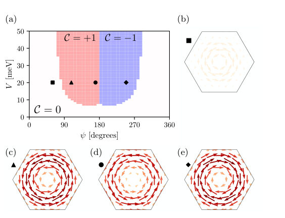
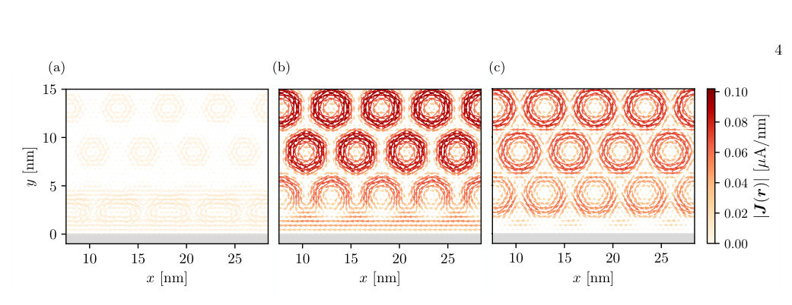
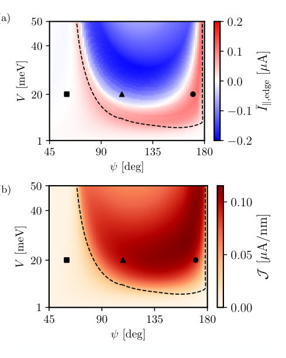
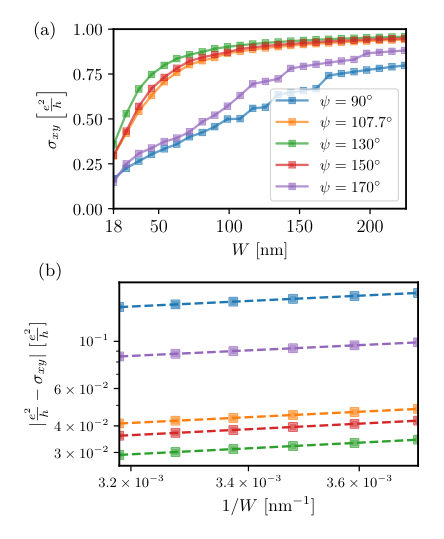
Summary. This work investigates twisted TMD homobilayers exhibiting Chern insulating states by analyzing the ground-state current density. The authors demonstrate that the maximum local current amplitude serves as a robust, measurable marker for non-zero topological order ($C eq 0$). By calculating both the currents and the resulting magnetic fields, they provide theoretical evidence linking bulk topology to observable real-space electromagnetic signatures.
Why it may be interesting. The direct link established between a measurable local current density (a real-space observable) and a fundamental topological invariant ($C$) provides an experimental roadmap for detecting exotic quantum states in solid-state materials, which is highly relevant to condensed matter theory.
Main problem. To determine if a measurable local quantity exists that acts as a real-space marker for topological phases with non-zero Chern number in twisted TMD homobilayers.
Main result. The maximum amplitude of the ground-state current density in the bulk, $\max |J(r)|$, is shown to be a reliable local proxy for detecting non-trivial Chern insulating states ($C eq 0$).
Method. Numerical calculations are performed on a continuum model Hamiltonian describing twisted TMD homobilayers, analyzing the ground-state current density ($\mathbf{J}(\mathbf{r})$) and its associated magnetic field using the Biot-Savart law.
Model / system. The system is modeled by twisted transition metal dichalcogenide (TMD) homobilayers hosting Chern insulating states. The physics is captured by a continuum model Hamiltonian involving intra-layer and inter-layer potentials, which breaks time-reversal symmetry.
Key observables. Local current density $\mathbf{J}(\mathbf{r})$ (exhibiting whirlpools), the maximum bulk current amplitude $\max |J(r)|$, Hall conductance ($\sigma_{xy}$), and the generated magnetic field components ($B_x, B_y, B_z$).
Important parameters / regimes. The topological invariant is the Chern number ($C$); key parameters include the twist angle ($\psi$) and ribbon width ($W$).
Assumptions / limitations. The analysis relies on a continuum model description for twisted TMD homobilayers and assumes that local current density accurately tracks global topology.
Figures summary. Figures illustrate the Topological Phase Diagram showing $C eq 0$ regions correlating with bulk current whirlpools. Other figures show $\sigma_{xy}$ scaling with width ($W$) and magnetic field components generated by the currents at various distances ($d$).
Paper structure. The paper progresses from establishing the local current marker ($\max |J(r)|$) in the bulk, to analyzing the contributions of intra-band vs. inter-band currents, and finally examining how global quantities like $\sigma_{xy}$ scale with finite width $W$ and how the resulting magnetic field can be measured.
Recent materials advances have made it possible to fabricate twisted transition metal dichalcogenide homobilayers. These systems have been shown to host integer and fractional Chern insulating states. Because of spontaneous time reversal symmetry breaking, their ground state harbors intriguing spin-polarized currents with whirlpools on the moiré length scale that can be measured by scanning probe methods. We first provide a quantitative analysis of these persistent currents and then show that the maximum of the amplitude of the current density in the bulk of the sample is an accurate tracker of topological order. We conclude by calculating how the quantization of the Hall conductance is affected by finite-size effects.
Authors: Andrew J. Baldwin, Jonathan A. Jones
Type: theory · Category: quantum information and computing · PDF: https://arxiv.org/pdf/2606.09624v1
Analysis basis: full PDF text, analyzed in chunks
Topic relevance: methods for driven-dissipative 1/5




Summary. This work demonstrates that when shaping pulses for quantum control, restricting the control fields to vary only in phase (phase-only control) is computationally advantageous over controlling both amplitude and phase. The authors prove this equivalence by showing that complex amplitude modulations can be accurately approximated using sequences of phase-shifted sub-pulses. This simplifies the optimization process while maintaining high fidelity for quantum gate operations.
Why it may be interesting. It provides a highly efficient theoretical framework for designing complex quantum gates by restricting the control parameters to only phases, which simplifies optimization landscapes significantly compared to full amplitude/phase control.
Main problem. The paper compares phase-only control versus full phase-and-amplitude control for designing shaped pulses using the GRAPE algorithm.
Main result. Phase-only optimization is shown to be computationally superior (faster and simpler) while achieving equivalent controllability to amplitude/phase methods.
Method. Optimal control theory, specifically utilizing the Gradient Ascent Pulse Engineering (GRAPE) algorithm for pulse design.
Model / system. The system involves controlling a spin-1/2 nucleus interacting with an RF field, described by time-dependent Hamiltonians. The control is applied via shaped pulses in the xy-plane.
Key observables. Infidelity (measure of deviation from ideal evolution), fidelity, and average power deposition.
Important parameters / regimes. Pulse amplitude ($\alpha$), frequency offset ($\Omega$), total pulse time ($ au$), and the number of sub-pulses used in approximations.
Assumptions / limitations. The equivalence between phase-only and full control is shown via approximation (Trotterization), which assumes certain commutation relations hold for the background Hamiltonian ($H_0$).
Figures summary. Figures illustrate simulating amplitude modulation using multiple sub-pulses (Trotter approximations) and comparing the resulting fidelity/infidelity of phase-only vs. full control designs.
Paper structure. The paper first introduces the comparison between control methods, then details the mathematical equivalence via Trotterization, demonstrates the computational advantages of phase-only control, and concludes with practical implementation notes regarding pulse smoothing.
We compare phase-only control with phase-and-amplitude control when designing shaped pulses using the GRAPE algorithm, and explain why phase-only control has significant advantages. Trotterisation can be used to simulate amplitude modulation with phase modulation, indicating that the two approaches are fundamentally equivalent. Pulses designed by either method can be interconverted, but phase-only optimization is faster and simpler. The resulting pulses can then be converted into phase-and-amplitude form for more robust implementation if desired.
Authors: J. V. S Scursulim
Type: both · Category: quantum information and computing · PDF: https://arxiv.org/pdf/2606.08504v1
Analysis basis: full PDF text, analyzed in chunks
Topic relevance: correlated cavity matter 1/5
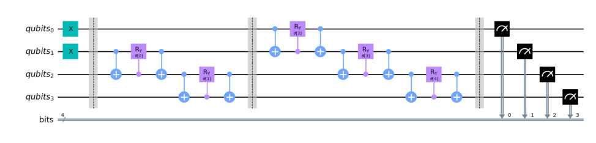
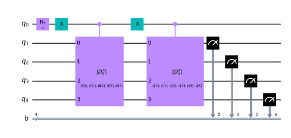
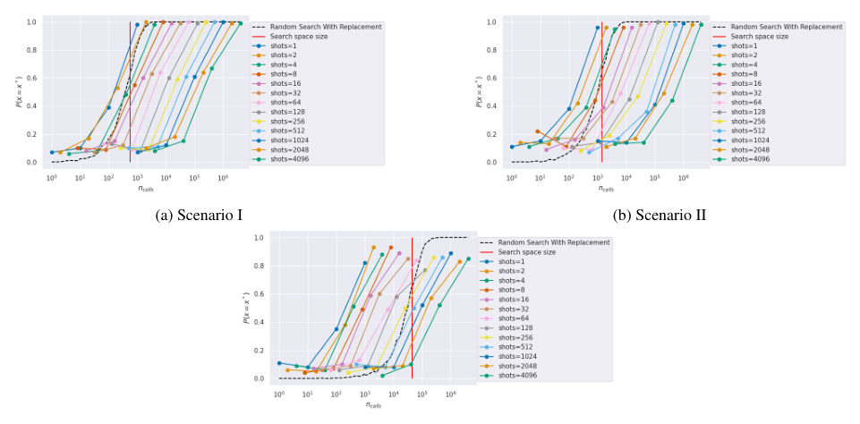
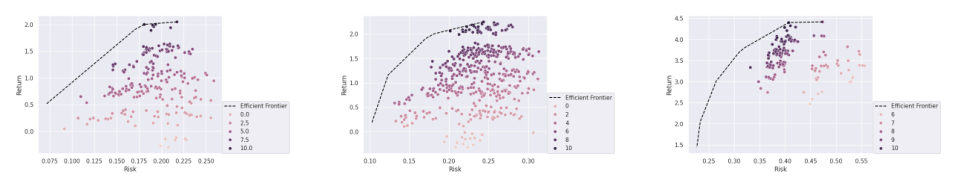
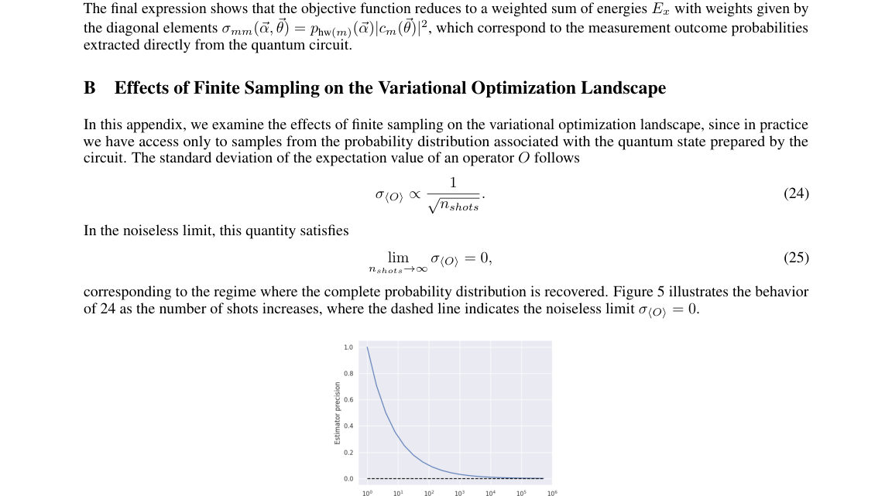
Summary. This paper introduces a novel mixed Dicke state ansatz designed for Variational Quantum Eigensolvers tackling combinatorial optimization with hard equality and inequality constraints. By structurally encoding these constraints into the quantum circuit, it eliminates the need for penalty terms common in VQAs. The method is validated to outperform random search significantly as the problem complexity increases.
Why it may be interesting. This work provides a concrete, structured method to embed complex physical constraints directly into quantum circuits, which is crucial for applying VQE to real-world constrained problems in quantum simulation or computation.
Main problem. The core challenge is designing a variational quantum circuit ansatz expressive enough for constrained combinatorial optimization problems without relying on computationally expensive penalty terms.
Main result. The proposed mixed Dicke state ansatz successfully encodes both equality and inequality constraints directly into the quantum circuit, demonstrating clear advantages over random search as the feasible search space grows.
Method. The authors utilize a Variational Quantum Eigensolver (VQE) framework, adapting the density matrix formalism to construct a feasibility-preserving ansatz based on pure and mixed Dicke states.
Model / system. The problem is mapped onto finding the ground state energy of an Ising Hamiltonian. The quantum state space is explored using Dicke states, which are generalized via tensor products to handle multiple constraint groups.
Key observables. Probability of finding the optimal solution ($P(x = x^*)$), expectation value $\langle H angle$, and the reduced density matrix $\sigma(\vec{\alpha}, \vec{ heta})$.
Important parameters / regimes. Constraint complexity (number/type of constraints), number of objective function calls ($n_{ ext{calls}}$), and hardware noise levels.
Assumptions / limitations. The framework assumes that the optimal solution can be found by minimizing the expectation value over the constrained subspace, although achieving perfect convergence requires many iterations.
Figures summary. Figures compare the probability of finding the optimum versus objective function calls for VQE-Dicke against random search; another figure shows sampled portfolio points relative to the classical efficient frontier.
Paper structure. The paper introduces the need for constraint enforcement in VQAs, proposes the mixed Dicke state ansatz structure (extending pure states), validates this approach using combinatorial portfolio optimization across increasing complexity scenarios, and concludes with hardware performance analysis on NISQ devices.
Combinatorial optimization can be addressed with quantum computing through variational quantum algorithms, but a central challenge in this approach is to design an ansatz expressive enough to explore the feasible subspace of the Hilbert space where the optimal solution lies. Another major challenge is tuning the Lagrange multipliers in penalty terms to enforce feasibility and guarantee solution quality. To address both challenges, we propose the first feasibility-preserving mixed Dicke state ansatz for Hamming weight constrained combinatorial optimization, extending the density matrix formalism to structurally encode equality and inequality constraints directly into the quantum circuit, thereby eliminating the need for penalty terms in the objective function. The proposed framework handles both constraint types, with the pure Dicke state ansatz recovered as a special case corresponding to equality constraints, and generalizes to multiple constraint groups via tensor products of individual pure or mixed Dicke states. We validate the proposed approach in the context of combinatorial portfolio optimization across three experimental scenarios with increasing constraint complexity, using the CMA-ES optimizer and comparing its performance against random search with replacement restricted to the feasible subspace. As the feasible search space grows, the proposed ansatz demonstrates a clear advantage over random search in terms of the number of objective function calls required to identify high-quality solutions. Hardware experiments on IBM NISQ processors confirm that noise mitigation and circuit transpilation optimizations remain open challenges for practical deployment. The framework is general and directly applicable to other combinatorial optimization problems with Hamming weight constraints.
Authors: Arpon Basu, Joshua Brakensiek, Pravesh K. Kothari, Aaron Putterman
Type: theory · Category: quantum information and computing · PDF: https://arxiv.org/pdf/2606.09728v1
Analysis basis: full PDF text, analyzed in chunks
Topic relevance: analog quantum simulation 1/5
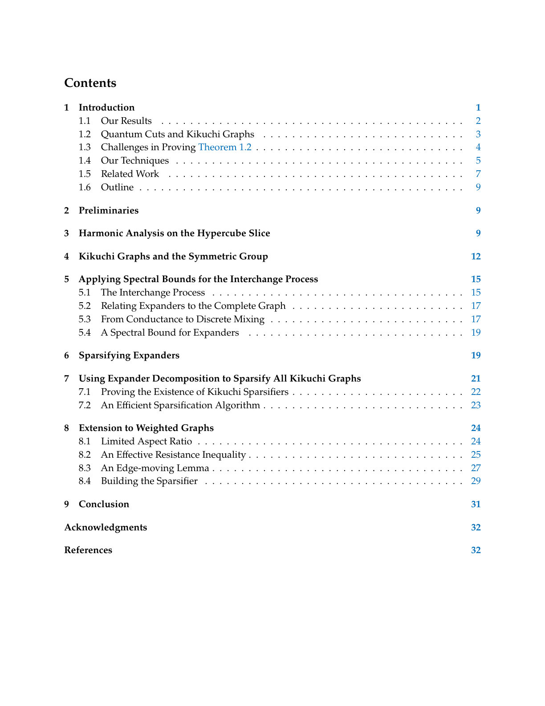
Summary. This paper develops methods to create highly efficient 'Quantum Cut sparsifiers' for QC Hamiltonians describing many-body quantum systems. It proves that these complex Hamiltonians can be represented by far fewer terms while maintaining spectral accuracy. This breakthrough has significant implications for the simulation and understanding of large, interacting quantum systems.
Why it may be interesting. This work provides a powerful tool for analyzing complex quantum Hamiltonians by showing they can be accurately approximated using only a sparse set of interactions, which is crucial for simulating large quantum systems efficiently.
Main problem. The primary goal is constructing an efficient, sparse representation (sparsifier) for Quantum Cut (QC) Hamiltonians associated with a general graph G.
Main result. The authors prove the existence of such a sparsifier $ ilde{L}_e^G$ whose size scales as $O(n/\epsilon^2)$ edges, preserving the energy spectrum up to $(1 \pm \epsilon)$.
Method. The technique relies on decomposing the action of the Hamiltonians into invariant subspaces and employing advanced operator-valued inequalities (like Alon-Kozma's) derived from harmonic analysis on hypercube slices.
Model / system. The system is defined by QC Hamiltonians, $L_G$, which are related to the Laplacian of a graph called the Kikuchi Graph ($KG$). These operators act on function spaces over subsets of vertices in an $n$-qubit system.
Key observables. Spectral approximation error ($\epsilon$), the size of the sparsifier $|E'|$, and the spectral gap relative to the full Hamiltonian.
Important parameters / regimes. The number of qubits ($n$) and the desired accuracy ($\epsilon$).
Assumptions / limitations. Success relies on decomposing graphs into 'mild expanders' and utilizing advanced inequalities that overcome limitations faced by standard matrix concentration methods when local term importance is high.
Paper structure. The paper builds conceptually from classical cut-sparsifiers to the quantum setting, establishing the connection to Kikuchi graphs. The methodology involves spectral decomposition, applying advanced inequalities (Alon-Kozma), and generalizing results from complete/expander graphs to arbitrary weighted graphs via expander decomposition.
In this paper, we continue a line of research initiated by Basu, Brakensiek, and Putterman [2026] studying the sparsifiability of Hamiltonians. We focus particularly on the sparsifiability of the widely-studied Quantum Cut (QC) Hamiltonians. Our main result is that in an $n$-qubit system, any $n$-qubit QC Hamiltonian can be sparsified to $\widetilde{O}(n /\varepsilon^2)$ many terms while preserving the energy of every state up to a factor of $1 \pm \varepsilon$. Our result can be interpreted as giving an importance sampling scheme for the edges of an arbitrary graph $G$ such that the \emph{Kikuchi} graph at level $\ell$ of the sampled graph is a spectral approximation to the Kikuchi graph of $G$. Importantly, the \emph{same} sampling scheme works simultaneously for all $\ell$. The natural approach of leverage score sampling, analyzed via matrix concentration inequalities, yields a polynomially worse bound in our setting because the underlying matrices have dimension $\sim 2^n$. Instead, our approach relies on decomposing the action of these matrices into invariant subspaces. Then, by using an operator-valued inequality of Alon and Kozma [Ann. Henri Poincaré, 2020], itself building on an \emph{octopus inequality} of Caputo, Liggett, and Richthammer [J. AMS, 2010], we extend our sparsification technique to all expander graphs. We then invoke expander decomposition to extend our sparsifier to all graphs.
Authors: Shun Ryuzaki, Hideo Mukai
Type: theory · Category: quantum information and computing · PDF: https://arxiv.org/pdf/2606.08592v1
Analysis basis: full PDF text, analyzed in chunks
Topic relevance: methods for driven-dissipative 1/5
Summary. This paper introduces Quantum Global Variational Learning (QGVL) as an efficient alternative to standard QAE methods for Quantum Error Correction. By consolidating local unitaries into a global structure, QGVL drastically reduces training complexity and time while maintaining high fidelity in correcting errors across various qubit codes. It demonstrates that this ML approach can achieve performance comparable to established theoretical stabilizer codes.
Why it may be interesting. For AMO physicists studying open quantum systems, this work provides a computational framework to model how machine learning can be used to design or optimize error mitigation protocols for physical hardware limited by decoherence.
Main problem. Developing efficient Quantum Error Correction (QEC) methods that avoid classical measurements and overcome training convergence issues inherent in large quantum neural networks.
Main result. The proposed Quantum Global Variational Learning (QGVL) approach significantly reduces the number of required unitary parameters compared to standard QAE, leading to substantial improvements in training time and robustness against internal network noise while matching established stabilizer code performance.
Method. The authors propose using a global structure within a quantum neural network framework for error correction. Training involves minimizing infidelity by optimizing trainable unitary matrices via gradient descent techniques adapted for quantum circuits.
Model / system. The system models qubits susceptible to various noise channels, including Pauli X errors and general depolarizing noise. QEC is tested using established codes like the 3-qubit repetition code, 5-qubit, Steane (7-qubit), and Shor (9-qubit) stabilizer codes.
Key observables. Mean fidelity of error correction output vs. input error rate ($p$), training time reduction (e.g., 80% for 3-qubit), and success rate in achieving convergence.
Important parameters / regimes. Error rates ($p$, $p_n$), number of qubits ($n=3, 5, 7, 9$), and network structure parameters ($m, n$).
Assumptions / limitations. The analysis often assumes that noise affecting different quantum states is equally probable when modeling internal network noise. The comparison relies on comparing QGVL performance against established algorithmic stabilizer codes.
Figures summary. Figures illustrate fidelity dependence on error rate for various qubit counts (3, 5, 7, 9) comparing QGVL to stabilizer codes; diagrams show the layered QNN architecture and the global unitary mapping structure.
Paper structure. The paper progresses from establishing the need for efficient QEC over measurement-based methods. It contrasts Quantum Autoencoders (QAE) with the proposed Global Variational Learning (QGVL), demonstrating QGVL's parameter efficiency, and finally validates its performance across increasing qubit counts and complex noise models.
Efficient quantum error correction is essential for the advancement of quantum computing. We propose a quantum neural network with a global structure that reduces the number of unitary matrices required in quantum circuits. This approach resulted in a 97\% reduction in training time and up to a 25\% improvement in the training completion rate, ultimately achieving a 100\% success rate in training while surpassing the error correction performance reported in previous studies. In addition, we demonstrated the enhanced robustness of quantum error correction against internal network noise. Moreover, the fidelity of quantum error correction under internal network noise increased by up to 15\% due to the reduced computational load.
Authors: Muskan
Type: theory · Category: quantum information and computing · PDF: https://arxiv.org/pdf/2606.09217v1
Analysis basis: full PDF text, analyzed in chunks
Topic relevance: interference shaping light 1/5
Summary. This paper analyzes the performance of various Quantum Key Distribution protocols for satellite-based quantum links, accounting for realistic atmospheric distortions. It compares standard QKD methods against high-dimensional extensions, concluding that higher dimensions offer superior robustness in noisy space channels. The findings guide protocol selection for future LEO quantum communication networks.
Why it may be interesting. This work directly addresses the practical implementation challenges of quantum communication over long distances by rigorously modeling atmospheric channel impairments and comparing encoding schemes (2D vs HD).
Main problem. The primary goal is to perform a comprehensive performance evaluation of Quantum Key Distribution (QKD) protocols specifically designed for satellite-based quantum communication links.
Main result. High-Dimensional QKD protocol HD-BB84 was shown to achieve higher key rates and superior noise tolerance compared to HD-Extended B92 under realistic atmospheric conditions.
Method. The analysis employs detailed numerical simulations using a circular/elliptic beam propagation model that incorporates complex atmospheric effects like diffraction, turbulence, attenuation, and pointing errors.
Model / system. The system modeled is the free-space quantum channel between Low Earth Orbit (LEO) satellites and ground stations. Protocols evaluated include BB84, B92, BBM92, E91, and their high-dimensional generalizations.
Key observables. Key rate performance, Quantum Bit Error Rate (QBER), Probability Distribution of Key Rate (PDR), and conditional von Neumann entropy $S(a|E)$.
Important parameters / regimes. Atmospheric parameters ($C_n^2$), zenith angle ($\phi$), link length ($L$), and the depolarizing channel parameter ($q$).
Assumptions / limitations. The analysis relies on approximations such as the elliptic-beam approximation for turbulence effects and models environmental noise contributions (e.g., using a depolarizing channel).
Figures summary. Figures illustrate key rate and QBER variations as functions of zenith angle, link length, and under different weather conditions for various protocols.
Paper structure. The paper builds from theoretical foundations (qubits, entanglement) to protocol evaluation. It systematically compares standard vs. high-dimensional protocols across varying atmospheric/operational regimes, culminating in detailed rate derivations using entropy bounds.
Quantum Key Distribution (QKD) has emerged as a fundamentally secure approach to communication in the era of quantum computing, offering protection against threats posed to classical cryptographic schemes such as RSA and Diffie-Hellman. This thesis presents a comprehensive performance analysis of satellite-based QKD protocols, focusing on both prepare-and-measure and entanglement-based schemes under realistic atmospheric and operational conditions. The study begins by introducing the theoretical foundations of quantum communication, including qubits, entanglement, and quantum entropy, and motivates the need for satellite-based QKD to overcome the distance limitations of fiber-based systems. Subsequently, the thesis evaluates four prominent QKD protocols-BB84, B92, BBM92, and E91-using a circular beam propagation model that incorporates atmospheric effects such as diffraction, turbulence, attenuation, and pointing errors, along with environmental noise contributions for uplink and downlink. Comparative numerical simulations reveal that protocol performance is strongly influenced by channel asymmetries, beam propagation characteristics, and noise, providing guidance on optimal protocol selection for low Earth orbit (LEO) satellite links. The research further investigates high-dimensional (HD) QKD protocols, specifically HD-BB84 and HD-Extended B92, using the elliptic-beam approximation to account for turbulence-induced distortions for both uplink and downlink. Simulations under vary ing system dimensions, weather conditions, and zenith angles demonstrate that HD-BB84 achieves higher key rates, superior noise tolerance, and more favorable probability distributions of the key rate compared to HD-Extended B92, highlighting the advantages of high-dimensional encoding for robust satellite-based QKD.
Authors: Taige Wang, Liang Fu
Type: theory · Category: numerical methods · PDF: https://arxiv.org/pdf/2606.08707v1
Analysis basis: full PDF text, analyzed in chunks
Topic relevance: methods for driven-dissipative 1/5


Summary. The paper proposes a neural statebank architecture to overcome the exponential scaling problem in simulating quantum circuits. By training autoregressive Transformers layer-by-layer, it creates a compact neural representation of the wavefunction trajectory. This method achieves high fidelity on large, complex circuits while drastically reducing memory requirements compared to exact simulation.
Why it may be interesting. This work provides a novel, memory-efficient computational tool to simulate quantum dynamics that goes beyond the limitations of both full state-vector storage and specialized tensor network methods for highly entangled or structured circuits.
Main problem. Predicting the output of quantum circuits is computationally intractable due to the exponential growth of the wavefunction, creating a bottleneck for verifying quantum processors.
Main result. The proposed neural statebank successfully simulates complex quantum circuits up to 34 qubits with low infidelity while requiring significantly less memory than exact state-vector evolution.
Method. It introduces an autoregressive Transformer checkpoint that learns the wavefunction trajectory layer by layer, approximating the full circuit evolution using a compact neural representation.
Model / system. The model simulates quantum circuits acting on N qubits. The system is characterized by its state vector $|\psi angle$ and its evolution through sequential unitary gates ($U = U_D \cdots U_1$).
Key observables. Infidelity (error rate) of the simulation, memory scaling relative to qubit number (N), and computational time.
Important parameters / regimes. System size (N up to 34 qubits), circuit depth/number of layers, entanglement structure (magic gates, non-diagonal branching).
Assumptions / limitations. The method assumes that the state evolution can be accurately captured by an autoregressive neural network trained sequentially on local gate updates. The primary limitation is accumulated error over deep circuits.
Figures summary. Figures compare memory usage and final infidelity across various simulators (State-Vector, MPS, Statebank) on demanding benchmarks like HCZCH; other figures benchmark the method on QAOA and Clifford circuits.
Paper structure. The paper introduces the statebank concept by addressing the exponential scaling problem. It details the autoregressive Transformer architecture for checkpointing, presents training procedures using local gate updates, and validates its performance against established simulators across diverse circuit families (HCZCH, QAOA, etc.).
Predicting the output of quantum circuits is a central bottleneck for verifying quantum processors because a generic wavefunction grows exponentially with system size. We introduce a neural statebank that learns this wavefunction along the circuit trajectory. Each layer is stored as an autoregressive Transformer checkpoint trained from local gate updates to the preceding checkpoint, producing a compact neural representation that can evaluate amplitudes and generate independent samples. On long-range circuits combining entanglement, magic, and non-diagonal branching, a 0.3-million-parameter statebank reaches $\sim 10^{-2}$ infidelity at 34 qubits, outperforming the other tested approximate simulators while using far less memory than exact state-vector evolution. The same architecture accurately simulates quantum approximate optimization, Clifford+$T$, and Clifford circuits.
Authors: Meng-Jun Hu
Type: theory · Category: other · PDF: https://arxiv.org/pdf/2606.09000v1
Analysis basis: full PDF text, analyzed in chunks
Topic relevance: quantum measurements 1/5
Summary. The paper proposes the Transformation-Response Framework (TRF), reformulating quantum mechanics by defining the state not as a vector in Hilbert space, but as a catalog of its complex responses ($\chi$) to all physical transformations. By postulating that this response function must be positive-definite, the authors derive the Born rule, Schrödinger equation, and path integrals as theorems, while also introducing 'product order positivity' as a potentially testable constraint.
Why it may be interesting. This work is highly relevant as it attempts to provide a foundational, axiomatic overhaul of quantum theory that bypasses canonical quantization procedures by rooting everything in measurable operational responses.
Main problem. The paper addresses conceptual tensions in standard quantum mechanics by seeking a logically economical, operationally grounded, and background-independent reformulation.
Main result. It derives the entire standard formalism of QM (Born rule, Schrödinger equation, path integral) from a single postulate: that the state is defined by a positive-definite response function $\chi$ to all physical transformations.
Method. The core method involves defining the quantum state operationally as the characteristic function $\chi(g)$ on the group $G$ of physical transformations, and then using functional analysis (like GNS construction and Bochner's theorem) to derive standard QM postulates from this single constraint.
Model / system. The model is a general quantum system whose symmetries are described by a transformation group $G$. The framework applies universally, aiming to cover everything from particle physics (Poincaré group) to background-independent gravity.
Key observables. The characteristic function $\chi(g)$, which catalogs the system's response to all transformations $g \in G$.
Important parameters / regimes. The fundamental constant $\hbar$, which emerges uniquely from consistency requirements across subgroups; time is treated as a coordinate along an automorphism subgroup.
Assumptions / limitations. The primary assumption is that physical reality can be entirely characterized by measurable responses to operations ($\chi$ must be positive-definite). A secondary, crucial constraint introduced is 'product order positivity' for non-abelian groups.
Figures summary. Not specified in the notes; the structure relies on mathematical derivations involving group algebras and functional analysis.
Paper structure. The paper systematically derives QM postulates: first establishing the state via $\chi(g)$ (Chunk 1/2), then constructing Hilbert space and deriving the Born rule (GNS/Bochner, Chunk 3), generalizing dynamics to automorphisms (Chunk 4), extending this to path integrals for QFT (Chunk 5), and finally introducing the novel constraint of product order positivity for non-abelian groups (Chunk 6).
We present the transformation-response framework, an operational reformulation of quantum mechanics. A quantum state is not a Hilbert space object but the catalog of a system's responses to all physical transformations: for each operation $g$ from the system's local group $G$, an interference experiment gives a complex value $χ(g)$. The collection $\{χ(g): g\in G \}$ is the characteristic function and defines the state. The only postulate is that $χ$ is positive-definite, encoding the requirement that no superposition of transformations yields negative probability. From this single assumption, the entire standard formalism is derived: Hilbert space via GNS construction, Born rule via Bochner theorem, Schrödinger equation from group automorphisms, and especially Feynman path integral as a Trotter limit. The framework is background-independent and time-neutral: time is a coordinate along a one-parameter subgroup of $G$. It also reveals a new physical constraint, product order positivity, which may lead to testable predictions. The framework provides a unified, economical, and falsifiable foundation for quantum theory rooted in operational primitives.
Papers from primary archives without highlighted authors or any topic match. Click to expand.
Authors: Renyu Wang, Leonid P. Pryadko
Type: theory · Category: quantum information and computing · PDF: https://arxiv.org/pdf/2606.08771v1
Analysis basis: full PDF text, analyzed in chunks
Summary. This paper presents a comprehensive algebraic theory for constructing Bivariate-Bicycle Surface Codes (BBS codes). It shows that the code's dimension and structure are determined by counting the common roots of two defining bivariate polynomials. The key contribution is a general construction algorithm applicable to complex, tilted boundaries without needing manual boundary fixes.
Why it may be interesting. While focused on abstract algebra, the rigorous determination of code parameters based purely on polynomial root counting provides deep insights into the topological constraints governing quantum error correction codes, which is fundamental to building fault-tolerant quantum computers.
Main problem. The paper develops a general algebraic framework for constructing Bivariate-Bicycle Surface (BBS) codes, relating their parameters to the common roots of defining bivariate polynomials over a finite field.
Main result. A robust construction prescription is provided that determines the code dimension and distance by counting the number of finite, non-zero common roots of the defining polynomials, applicable even for arbitrarily tilted boundaries without corner corrections.
Method. The analysis heavily employs algebraic coding theory, utilizing concepts like chain complexes, Smith Normal Form invariants, resultants, and analyzing polynomial factorization properties over Laurent polynomial rings.
Model / system. The model is the Bivariate-Bicycle Surface Code (BBS code), which are quantum error-correcting codes defined on a lattice structure using stabilizer generators derived from pairs of bivariate polynomials $a(x, y)$ and $b(x, y)$.
Key observables. Code dimension ($k$), minimum distance ($d$), the number of common finite roots of $a$ and $b$, and topological invariants like $k_{TO}$.
Important parameters / regimes. The defining polynomials $a(x, y)$ and $b(x, y)$, the field $\mathbb{F}_q$, and boundary conditions (e.g., rectangular vs. tilted).
Assumptions / limitations. The analysis assumes specific edge conditions must be met for the general construction to hold without needing ad-hoc corner corrections; it also relies on the bulk condition being satisfied.
Figures summary. Figures illustrate planar layouts of BB codes, examples of boundary structures (smooth/rough), and visualizations of code generators derived from polynomials $a$ and $b$.
Paper structure. The paper progresses by first establishing the connection between code dimension and common roots; it then details algebraic machinery using chain complexes and SNF invariants to analyze solutions in strips; finally, it generalizes this construction to arbitrary boundaries and compares its results against existing methods.
We relate the properties of bivariate-bicycle-surface (BBS) codes, constructed from a pair of bivariate polynomials over a finite field, to the number and location of their common roots in the extension field. The number of roots $(x,y)$ with finite, non-zero coordinates -- counted with algebraic multiplicity -- determines the dimension of the codes. This dimension is invariant under monomial automorphisms of the Laurent polynomial ring. Conversely, roots with zero or infinite $x$- or $y$-coordinates indicate that specialized generators are required near the corresponding boundary (e.g., the left or right boundary for a root where $x$ is zero or infinite, respectively). These roots can appear or disappear under monomial transformations, which reveals the structure of tilted boundaries. Based on these results, we formulate a prescription for constructing BBS codes that works for regions with rectangular, diagonal, and arbitrarily tilted boundaries. A key advantage of this approach is that no corner corrections are needed, provided the polynomials satisfy orientation-specific edge conditions.
Authors: Francisco M. Fernández
Type: theory · Category: other · PDF: https://arxiv.org/pdf/2606.08290v1
Analysis basis: full PDF text, analyzed in chunks
Summary. This paper mathematically compares the standard power-series method against an alternative wavefunction ansatz for solving the Schrödinger equation for molecular potentials like the pseudoharmonic and Kratzer-Fues forms. The authors argue that their standard power-series approach is superior because it is simpler and yields general results via a two-term recurrence relation, unlike the more complex method they critique.
Why it may be interesting. This is highly relevant as it deals directly with solving fundamental quantum mechanical equations for molecular systems, which is core to AMO physics. The critique of alternative methods provides valuable insight into rigorous solution techniques.
Main problem. The paper compares two mathematical techniques for solving the Schrödinger equation when applied to molecular potentials.
Main result. The standard power-series method is demonstrated to be mathematically simpler and more powerful than an alternative wavefunction ansatz proposed by Ikhdair and Sever.
Method. The analysis involves deriving recurrence relations for coefficients arising from series solutions to the radial Schrödinger equation, comparing two distinct formalisms.
Model / system. The study focuses on solving the eigenvalue problem for diatomic molecules using specific potentials: the pseudoharmonic potential and the Kratzer-Fues potential. The underlying physics is governed by the radial part of the Schrödinger equation after the Born-Oppenheimer approximation.
Key observables. Energy eigenvalues (E) and the corresponding eigenfunctions R(r).
Important parameters / regimes. The reduced mass ($\mu$) of the nuclei, and quantum numbers determining the state.
Assumptions / limitations. It assumes that physically acceptable solutions must arise from truncating the infinite power series to yield a polynomial solution.
Paper structure. The paper introduces the problem by stating the comparison between two methods. It then applies these methods to specific potentials (pseudoharmonic and Kratzer-Fues) to derive recurrence relations, ultimately concluding with a direct comparison of the mathematical utility of the two approaches.
We show that the standard power-series method described in many textbooks of quantum-mechanics and quantum-chemistry is simpler and more powerful than the wavefunction approach proposed by Ikhdair and Sever [Cent. Eur. J. Phys. 6, 697 (2008)]. As illustrative examples we choose the pseudoharmonic and Kratzer-Fues potentials already treated by those authors.
Authors: Alexander DeRieux, Walid Saad
Type: both · Category: quantum information and computing · PDF: https://arxiv.org/pdf/2606.08276v1
Analysis basis: full PDF text, analyzed in chunks
Summary. This paper introduces Quantum-Native Reinforcement Learning (QnRL), a framework that overcomes the limitations of classical and prior quantum RL by representing probability distributions as complex quantum states. It utilizes a novel QuAK algorithm to analyze these distributions directly in Hilbert space, leading to superior performance across diverse simulated environments.
Why it may be interesting. It provides a concrete methodology for embedding complex statistical learning problems (like DRL) directly into quantum circuit operations, offering insights into how quantum information theory can solve computational bottlenecks in AI.
Main problem. Existing Quantum Reinforcement Learning (QRL) methods limit expressive power by only estimating expected outcomes, failing to model the full probability distributions governing stochastic environments.
Main result. The proposed QnRL framework achieves significantly higher evaluation scores and requires fewer parameters than baselines by natively modeling conditional return distributions in Hilbert space.
Method. It introduces Quantum-Native Reinforcement Learning (QnRL), which uses a novel Quantum Amplitude Kickback (QuAK) algorithm to analyze moments of superimposed quantum state distributions directly within the complex Hilbert space.
Model / system. The system extends classical DRL by representing return and policy distributions as superimposed, entangled quantum states in a combined action-return Hilbert space ($H_A \otimes H_Z$). The core mechanism involves Variational Quantum Circuits (VQC) for distribution generation.
Key observables. Evaluation scores, expected total reward, conditional action policy distribution $P(A|x)$, and the ability to capture complex correlations via phase/amplitude components.
Important parameters / regimes. Action qubits ($q_A$), return qubits ($q_Z$), moment order ($m$), expectation exponent ($n$), circuit depth ($L$).
Assumptions / limitations. The primary assumption is that quantum computation can provide an advantage by keeping the entire distributional learning process within the complex Hilbert space, avoiding classical measurement sampling loss.
Figures summary. Figures illustrate the four core stages of QnRL: Return distribution generation (superposition), moment analysis via QuAK, action selection based on moments, and final model optimization.
Paper structure. The paper details the system model expansion from classical to quantum settings, introduces the QnRL framework and the QuAK algorithm in dedicated sections, presents comprehensive results across multiple challenging environments, and concludes with detailed hyperparameter comparisons.
Quantum reinforcement learning (QRL) is a promising approach to learn effective decision strategies across several applications with stochastic environments. Instead of directly modeling the random variables that govern these environments, existing QRL architectures indirectly approximate environment behavior by estimating expected outcomes, which limits their expressive power and adaptive potential. Overcoming such challenges requires a novel QRL approach that exploits the distributional nature of quantum computers to directly model environment random variables as quantum state distributions. Hence, in this paper, a novel framework dubbed quantum-native reinforcement learning (QnRL) is proposed. QnRL is a distributional RL framework that learns conditional distributions naturally in Hilbert space via superimposed and entangled quantum states. Thus, QnRL can directly model the behavior of stochastic learning environments via the natural properties of quantum systems. QnRL accomplishes this via a novel, proposed quantum amplitude kickback (QuAK) algorithm that enables comparing the $n$-th power of the $m$-th moment of multiple superimposed distributions. It is theoretically proven that a conditional action policy distribution is distilled from the moments of a quantum generative model entirely within Hilbert space via QuAK, and optimized via QnRL. This complex distribution composition is also shown to provide extra dimensions for expressing environment correlations that are unknown to purely classical and classically-sampled quantum distributional models. Experimental results across diverse environments show that QnRL achieves up to $82.9\%$ higher evaluation scores, with up to $94.3\%$ fewer parameters on average, more accurately estimates the expected return for unseen observations, and better adapts to varying stochastic conditions compared to the baseline.
← Index · ← Previous · Next →